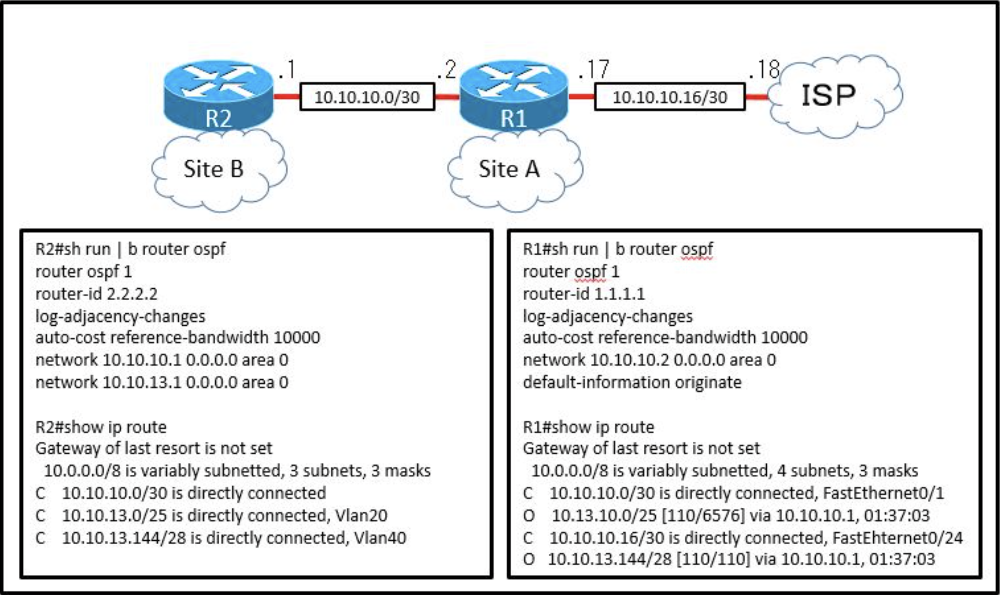
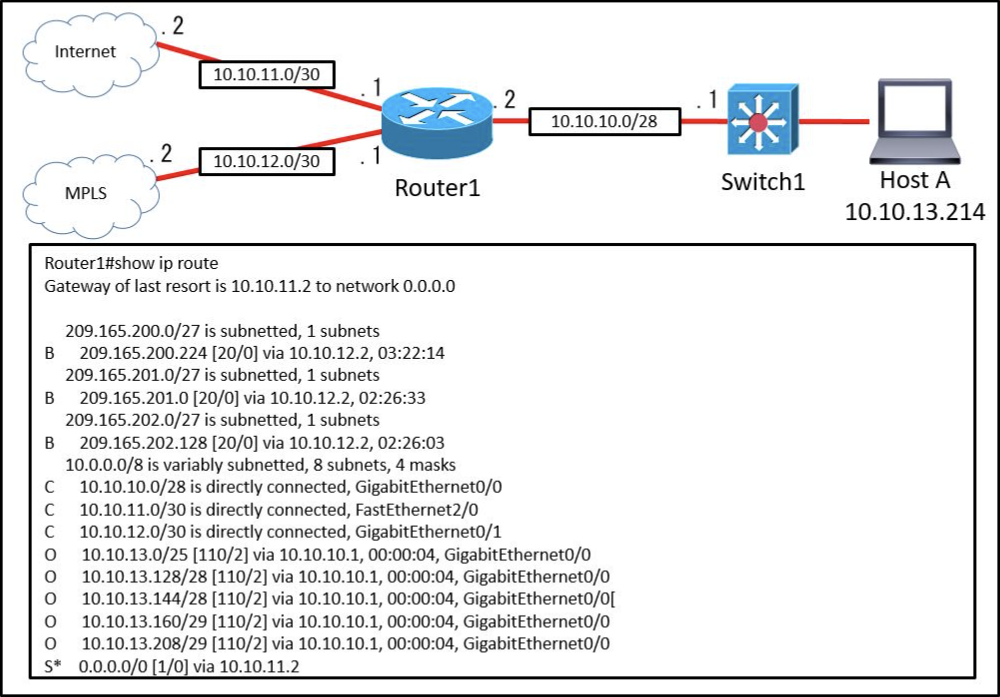
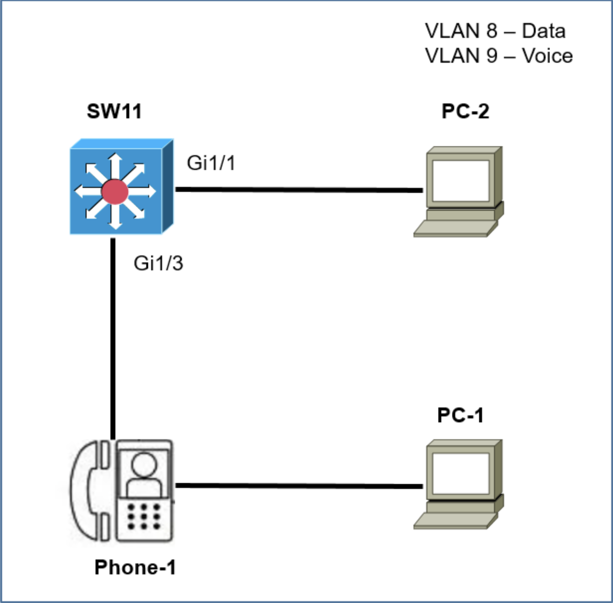
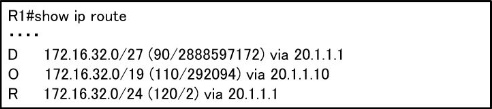

問題 1 データプレーン内で発生するネットワークアクションはどれですか？1つまたはそれ以上選択してください:
a. ルーティングプロトコル（OSPF、EIGRP、RIP、BGP）を実行する
b. 宛先IPアドレスをIPルーティングテーブルと比較します
c. 着信ICMPエコー要求に応答する
d. 着信NETCONFRPCから構成を変更する
問題 2 展示を参照してください

Router1は、ホスト10.10.13.165宛てのパケットをどのデバイスに送信しますか？1つまたはそれ以上選択してください:
a. Router5
b. Router4
c. Router2
d. Router3
問題 3 UTP Cat5eケーブルとCat6aケーブルの2つの類似点は何ですか？2つ選択してください。1つまたはそれ以上選択してください:
a. 両方とも少なくとも1ギガビットの速度をサポートします。
b. どちらも500MHzの周波数で動作します。
c. 両方とも最大55メートルの距離をサポートします。
d. 両方とも最大100メートルの距離をサポートします。
e. どちらも最大10ギガビットの速度をサポートします。
問題 4 Cisco Wireless LAN Controllerに実装された場合のリンク集約に関する説明として正しいものはどれですか？1つまたはそれ以上選択してください:
a. クライアントトラフィックを渡すには、1つの機能的な物理ポートが必要です
b. WLCの帯域幅を有効にすると、500Mbpsに低下します
c. EtherChannelは「モードアクティブ」に設定する必要があります
d. クライアントトラフィックを渡すには、2つ以上のポートを構成する必要があります
問題 5 脅威または攻撃の種類にあう脅威軽減技術を選択してください。(本番試験はドラッグアンドドロップ)
問題 6 どのMACアドレスがVRRP仮想アドレスとして認識されますか？1つまたはそれ以上選択してください:
a. 0007.C070/AB01
b. 0005.3711.0975
c. 0000.5E00.010a
d. 0000.0C07.AC99
問題 7 QoSにてインタラクティブな音声とビデオに適した優先順位付けの方式はどれですか？1つまたはそれ以上選択してください:
a. low-latency queuing
b. round-robin scheduling
c. expedited forwarding
d. traffic policing
問題 8 ネットワーク自動化の必要性を支援する2つの主要なドライバはどれですか？（2つ選択してください。）1つまたはそれ以上選択してください:
a. トレーニングの必要性を排除する
b. 自己診断と自己回復への依存度の高まり
c. ポリシーから派生したリソースの提供
d. ハードウェアフットプリントの削減
e. リソースプロビジョニング用の送出ポイントを提供する
問題 9 SDNコントローラーは、転送の変更をサウスバウンドAPIに中継するための通信プロトコルとして何を使用しますか？1つまたはそれ以上選択してください:
a. Java
b. REST
c. XML
d. OpenFlow
問題 10 スモールオフィス/ホームオフィスアーキテクチャに適したWANアクセステクノロジーはどれですか？1つまたはそれ以上選択してください:
a. フレームリレーパケット交換
b. ブロードバンドケーブルアクセス
c. 統合サービスデジタルネットワークスイッチング
d. 専用のポイントツーポイント専用回線
問題 11 クライアントとサーバーが同じ物理ネットワーク上にない場合、DHCPのクライアントとサーバー間で要求と応答を転送するためにどの仕組みが使用されますか？1つまたはそれ以上選択してください:
a. DHCP OFFER
b. DHCP DISCOVER
c. DHCPリレーエージェント
d. DHCPサーバー
問題 12 展示を参照してください。
R5はネットワーク上の現在のDRであり、R4はBDRです。それらのインターフェイスはフラッピングしているため、ネットワークエンジニアは、OSPFネットワークが別のDRとBDRを選択することを望んでいます。 エンジニアはどの構成セットを実装する必要がありますか？1つまたはそれ以上選択してください:
a. R4(config)#interface gi0/0
R4(config-if)#ip ospf priority 20
R5(config)#interface gi0/0
R5(config-if)#ip ospf priority 10
b. R2(config)#interface gi0/0
R2(config-if)#ip ospf priority 259
R3(config)#interface gi0/0
R3(config-if)#ip ospf priority 256
c. R5(config)#interface gi0/0
R5(config-if)#ip ospf priority 120
R4(config)#interface gi0/0
R4(config-if)#ip ospf priority 110
d. R3(config)#interface gi0/0
R3(config-if)#ip ospf priority 255
R2(config)#interface gi0/0
R2(config-if)#ip ospf priority 240
問題 13 PortFast機能を使用する2つの利点は何ですか？（2つ選択してください）1つまたはそれ以上選択してください:
a. 有効なインターフェイスは、フォワーディング状態に移行する前に50秒待機します
b. ラーニング状態に移行する有効なインターフェイスは、スイッチトポロジの変更を生成します
c. 有効なインターフェイスは、トポロジ変更通知を生成しません。
d. 有効なインターフェイスが起動し、すぐにフォワーディング状態に移行します
e. 有効なインターフェイスは自動的にリスニング状態になります
問題 14 EUI-64アドレスが生成された場合の予想される結果は何ですか？1つまたはそれ以上選択してください:
a. インターフェイスIDはランダムな64ビット値として構成されています
b. インターフェースのMACアドレスが変更なしでインターフェースIDとして使用されます
c. インターフェイスのMACアドレスの先頭に文字FE80が挿入されています
d. インターフェイスの元のMACアドレスの7番目のビットが反転されます
問題 15 デバイスがCiscoDNA Centerに追加されると、自動的に発生する2つのイベントはどれですか。1つまたはそれ以上選択してください:
a. デバイスはProvisioned状態になります。
b. デバイスはLocalサイトに割り当てられています。
c. デバイスはManaged状態になります。
d. デバイスはUnmanaged状態になります。
e. デバイスはGlobalサイトに割り当てられています。
問題 16 各説明からIPv6DNSレコードタイプを選択してください。(本番試験はドラッグアンドドロップ)
| 名前の逆引きをサポート |
PTR |
| ドメインをその権威ネームサーバーと関連付けます |
NS |
| ホスト名をIPアドレスと関連付けます |
AAAA |
| ある名前を別の名前にエイリアスする |
CNAME |
| ドメインのシリアル番号をその所有者に関連付けます |
SOA |
問題 17 HTTPのRESTAPI呼び出しメソッドの意味として正しい組み合わせを回答してください。（本番試験ではドラッグアンドドロップ）
問題 18 エンジニアがOSPFネイバーを指定ルータとして構成しました。 指定されたルータが適切なモードであることを確認するのはどの状態ですか？1つまたはそれ以上選択してください:
a. 2-way
b. フル(Full)
c. 交換(Exchange)
d. 初期化(Init)
問題 19 ネットワークにプライベートIPv4アドレッシングを実装することで達成される目標はどれですか？1つまたはそれ以上選択してください:
a. インターネットへの露出に対する追加レベルの保護を提供します
b. サーバーとワークステーションがパブリックネットワークの境界を越えて通信できるようにします
c. ネットワークルーターの転送テーブルのサイズを縮小します
d. インターネットを介して他のプライベートネットワークとの通信を可能にします
問題 20 エンジニアは、Ciscoスイッチとサードパーティスイッチ間のスイッチ間VLAN通信を設定する必要があります。どのアクションを実行する必要がありますか？1つまたはそれ以上選択してください:
a. ISLを構成する
b. IEEE802.1pを構成します
c. IEEE802.1qを構成します
d. DSCPを構成する
問題 21 PortFastが有効になっている場合、スイッチポートはどの状態に移行しますか？1つまたはそれ以上選択してください:
a. blocking
b. learning
c. forwarding
d. listening
問題 22 Cisco Unified WirelessネットワークはWi-Fiチャネルのオーバーラップにどのように応答しますか？1つまたはそれ以上選択してください:
a. 隣接するアクセスポイントで2.4GHzと5GHzが自動的に切り替わります
b. クライアントの負荷とバックグラウンドノイズを分析し、動的にチャネルを割り当てます
c. さまざまなメーカーのデバイスをさまざまなチャネルに分離します
d. 管理者は、デバイスごとまたはインターフェイスごとにチャネルを割り当てることができます
問題 23 TCPとUDPは、パケット配信の信頼性を提供する点でどのように違うのですか？1つまたはそれ以上選択してください:
a. TCPは、データの破損がないことを確認するための配信またはエラーチェックを保証しません。UDPはメッセージ確認を提供し、失われた場合にデータを再送信します
b. TCPはフロー制御を提供して、一度に多くのパケットを送信することでレシーバーの過負荷を回避し、UDPはシーケンスをチェックせずに連続の流れでレシーバーにパケットを送信します
c. TCPはデータの信頼できる配信を提供しないコネクションレス型プロトコルであり、UDPはシーケンスを使用して信頼できる配信を提供するコネクション型プロトコルです
d. TCPはウィンドウイングを使用してパケットを確実に配信します。 UDPは、3方向のハンドシェイクを確立することにより、ホスト間の信頼できるメッセージ転送を提供します
問題 24 CiscoワイヤレスLANコントローラGUIでWPA2-PSKを使用してWLANを構成する場合、どの2つの形式を選択できますか？1つまたはそれ以上選択してください:
a. ASCII
b. base64
c. 10進数(decimal)
d. 2進数(binary)
e. 16進数(hexadecimal)
問題 25 ネットワーク管理者は、ルーターR1へのリモートアクセス用にSSHを構成する必要があります。要件は、公開鍵と秘密鍵のペアを使用して、接続しているクライアントとの間の管理トラフィックを暗号化することです。
どの構成を適用すると要件を満たしますか？1つまたはそれ以上選択してください:
a. R1#enable
R1#configure terminal
R1(config)#ip domain-name cisco.com
R1(config)#crypto key generate rsa modulus 1024
b. R1#enable
R1#configure terminal
R1(config)#ip domain-name cisco.com
R1(config)#crypto key encrypt rsa name myKey
c. R1#enable
R1#configure terminal
R1(config)#ip domain-name cisco.com
R1(config)#crypto key generate ec keysize 2048
d. R1#enable
R1#configure terminal
R1(config)#ip domain-name cisco.com
R1(config)#crypto key generate ec keysize 1024
問題 26 展示を参照してください

default-information originateコマンドは、R1のOSPF構成で構成されます。サイトBのVLAN 20でワークステーションをテストした後、インターネット上のDNSサーバーに到達できない場合どの構成で問題が修正されますか？1つまたはそれ以上選択してください:
a. R2でip route 0.0.0.0 0.0.0.0 10.10.10.2コマンドを設定します
b. R1でip route 0.0.0.0 0.0.0.0 10.10.10.18コマンドを設定します
c. alwaysキーワードをR1のdefault-information originateコマンドに追加します
d. default-information originateコマンドをR2に追加します
問題 27 ネットワークビジネスのスケーラビリティと信頼性に役立つ2つのWANアーキテクチャオプションはどれですか？(2つ選択してください)1つまたはそれ以上選択してください:
a. シングルホームブランチ
b. ダイナミックルーティング
c. スタティックルーティング
d. 非同期ルーティング
e. デュアルホームブランチ
問題 28 展示を参照してください
R1はホスト10.10.13.10/32に到達するためにどのタイプのルートを使用しますか？1つまたはそれ以上選択してください:
a. ネットワークルート
b. フローティングスタティックルート
c. デフォルトルート
d. ホストルート
問題 29 展示を参照してください
IPアドレス10.20.20.1/24のVLAN20を許可するためにR1のEthernet0/0にサブインターフェイスを追加するには、どのコマンドが必要ですか？1つまたはそれ以上選択してください:
a. R1(config)#interface ethernet0/0
R1(config)#ip address 10.20.20.1 255.255.255.0
b. R1(config)#interface ethernet0/0.20
R1(config)#ip address 10.20.20.1 255.255.255.0
c. R1(config)#interface ethernet0/0.20
R1(config)#encapsulation dot1q 20
R1(config)#ip address 10.20.20.1 255.255.255.0
d. R1(config)#interface ethernet0/0
R1(config)#encapsulation dot1q 20
R1(config)#ip address 10.20.20.1 255.255.255.0
問題 30 TCPとUDPの信頼性と通信タイプに関する違いは何ですか？1つまたはそれ以上選択してください:
a. TCPは信頼性が高く、接続指向のプロトコルです。UDPは信頼性が低く、コネクションレス型プロトコルです
b. TCPは信頼性が高く、コネクションレス型プロトコルです。UDPは信頼性が低く、接続指向のプロトコルです
c. TCPは信頼性が低く、コネクションレス型プロトコルです。UDPは信頼性が高く、接続指向のプロトコルです
d. TCPは信頼性が低く、接続指向のプロトコルです。UDPは信頼性が高く、コネクションレス型プロトコルです
問題 31 ハブアンドスポークWANトポロジの機能は何ですか？1つまたはそれ以上選択してください:
a. サブスクライバー間の直接接続を提供します
b. アプリケーションの最適化をサポート
c. レイヤー2VPNをサポート
d. サブスクライバーサイト間でアクセス制限を実装できるようにします。
問題 32 トラフィックシェーピングの目的は何ですか？1つまたはそれ以上選択してください:
a. さまざまなフローを識別するマーキングメカニズムであること
b. 低速リンクでの遅延を軽減するため
c. フローが使用できる帯域幅を制限する
d. バッファリングされたフローに均等化キューイングを提供する
問題 33 EIGRPルート選択プロセスに影響を与える2つのアクションはどれですか？(2つ選択してください)1つまたはそれ以上選択してください:
a. ルータは宛先ルートへの最適なバックアップパスを計算し、それをフィージブルサクセサとして割り当てます
b. ルータは、既存のインターフェイスの遅延に256を掛けて、報告された距離を計算します
c. ルータは、宛先ルートへのすべてのパスの実行可能な距離を計算します
d. ルータは、アドバタイズされた距離を特定のルートのメトリックとして使用する必要があります
e. アドバタイズされた距離は、リンク上の帯域幅をローカルルータに通知するために、ダウンストリームネイバーによって計算されます
問題 34 組織のネットワーク上の新しいサブネットにプライベートIPv4アドレッシングが適切なのはどのような状況ですか？1つまたはそれ以上選択してください:
a. サブネット上のトラフィックは、サイト間VPNを経由して外部組織に到達する必要があります。
b. ネットワークには複数のエンドポイントリスナーがあり、ブロードキャストの数を制限することが望まれます。
c. 一意のアドレス空間は限られており、新しいサブネット上のトラフィックは組織内でローカルのままになります。
d. ISPは、Webサービスのために新しいサブネットをインターネットにアドバタイズする必要があります。
問題 35 属性と値のペアの順序付けられていないセットであるJSONデータ型はどれですか？1つまたはそれ以上選択してください:
a. Boolean
b. string
c. array
d. object
問題 36 NMSがエージェントからのSNMPトラップを処理する前に、どの条件が満たされる必要がありますか？1つまたはそれ以上選択してください:
a. NMSは、信頼できることを確認するために、2つの異なるSNMPエージェントから同じトラップを受信する必要があります。
b. NMSは、SNMPエージェントと同じルーターで構成する必要があります
c. NMSソフトウェアには、トラップに関連付けられたMIBをロードする必要があります。
d. NMSは、設定された間隔内にSNMPエージェントからトラップとインフォームメッセージを受信する必要があります
問題 37 通知レベルのメッセージングがsyslogサーバーに送信された場合、どのイベントが発生しましたか？1つまたはそれ以上選択してください:
a. デバッグ操作が実行されています
b. ネットワークデバイスが再起動しました
c. ルーティングインスタンスがフラップしました
d. ARPインスペクションが失敗しました
問題 38 各説明からDHCPスヌーピング用語を選択してください。(本番試験はドラッグアンドドロップ)
問題 39 Cisco Wireless LAN Controllerを使用する利点は何ですか？1つまたはそれ以上選択してください:
a. 自律的で軽量なAPをサポートします
b. 各アクセスポイントを個別に構成する必要がなくなります
c. セントラルAP管理には、より複雑な構成が必要です
d. 一意のSSIDは同じ認証方法を使用できません
問題 40 展示を参照してください
管理者は、10.0.0.0/30サブネットのアドレス最後の使用可能なアドレスで設定されたポートでCiscoDiscoveryProtocolをオフにする必要があります。どのコマンドセットが要件を満たしていますか？1つまたはそれ以上選択してください:
a. interface gi0/1
no cdp enable
b. interface gi0/0
no cdp advertise-v2
c. interface gi0/1
clear cdp table
d. interface gi0/0
no cdp run
問題 41 展示を参照してください
エンジニアは、音声およびデータトラフィックに対応するようにGigabitEthemet1/1を構成する必要があります。このタスクを実行する構成はどれですか？1つまたはそれ以上選択してください:
a. interface gigabitethernet1/1
switchport mode access
switchport voice vlan 300
switchport access vlan 400
b. interface gigabitethernet1/1
switchport mode trunk
switchport trunk vlan 300
switchport voice vlan 400
c. interface gigabitethernet1/1
switchport mode access
switchport access vlan 300
switchport voice vlan 400
d. interface gigabitethernet1/1
switchport mode trunk
switchport trunk vlan 300
switchport trunk vlan 400
問題 42 送信プロトコルで使用するTCP/IPプロトコルを選択してください。(本番試験はドラッグアンドドロップ)
問題 43 OSPFは、ルータR1とR2の間に設定する必要があります。DR/BDRの選択を回避するには、どのOSPF設定をルータR1に適用する必要がありますか。1つまたはそれ以上選択してください:
a. router ospf 1
network 192.168.1.1 0.0.0.0 area 0
interface e1/1
ip address 192.168.1.1 255.255.255.252
ip ospf cost 0
b. router ospf 1
network 192.168.1.1 0.0.0.0 area 0
hello interval 15
interface e1/1
ip address 192.168.1.1 255.255.255.252
c. router ospf 1
network 192.168.1.1 0.0.0.0 area 0
interface e1/1 ip address 192.168.1.1 255.255.255.252
ip ospf network broadcast
d. router ospf 1
network 192.168.1.1 0.0.0.0 area 0
interface e1/1
ip address 192.168.1.1 255.255.255.252
ip ospf network point-to-point
問題 44 ユーザーがOSPFを構成し、デフォルトでOSPFのギガビットイーサネットインターフェイスをアドバタイズしました。このインターフェイスはどのタイプのOSPFネットワークに属していますか？1つまたはそれ以上選択してください:
a. ポイントツーポイント
b. ブロードキャスト
c. ノンブロードキャスト
d. ポイントツーマルチポイント
問題 45 展示を参照してください。
192.168.10.33/28サブネットへのルートのメトリックは何ですか？1つまたはそれ以上選択してください:
a. 84
b. 193
c. 110
d. 128
e. 192
問題 46 OM3とOM4光ファイバーケーブルの類似点は何ですか？1つまたはそれ以上選択してください:
a. どちらもコア径が50ミクロンです
b. 両方とも9ミクロンのコア直径を持っています
c. 両方とも62.5ミクロンのコア直径を持っています
d. 両方とも100ミクロンのコア直径を持っています
問題 47 SDNコントローラーの2つの機能は何ですか？(2つ選択してください)1つまたはそれ以上選択してください:
a. レイヤー2転送
b. VTNの調整
c. DDoS攻撃からの保護
d. トポロジの管理
e. ホストの追跡
問題 48 従来のキャンパスデバイス管理に対するCisco DNA Centerの利点は何ですか？1つまたはそれ以上選択してください:
a. クロスドメインアダプターやサードパーティのSDKなど、さまざまな拡張オプションをサポートしています
b. クラスタモードで動作する場合、管理機能の高可用性をサポートします
c. ブラウンフィールド展開でのネットワーク要素の簡単な自動検出を可能にします
d. 主にネットワークの保証を提供するように設計されています
問題 49 パケットの状態をチェックして、パケットが正当であるかどうかを判断するネットワークアプライアンスとは何ですか？1つまたはそれ以上選択してください:
a. ファイアウォール
b. LANコントローラー
c. ロードバランサー
d. レイヤー2スイッチ
問題 50 ヘルパーアドレスがDHCPをサポートするように設定されている場合、設定はどこにありますか？1つまたはそれ以上選択してください:
a. パスに沿ったすべてのルーター
b. クライアントに最も近いルーター上
c. サーバーに最も近いルーター上
d. スイッチトランクインターフェイス上
問題 51 どのスパニングツリー拡張機能がラーニング状態とリスニング状態を回避し、すぐにポートを転送状態にしますか？1つまたはそれ以上選択してください:
a. BPDUguard
b. BPDUfilter
c. PostFast
d. Backbonefast
問題 52 各説明からQoS輻輳管理用語を選択してください。(本番試験はドラッグアンドドロップ)
| 指定されたクラスのトラフィックに保証された帯域幅を提供します |
CBWGQ |
| パケットを4つの優先度ベースのキューの1つに配置します |
PQ |
| 1つ以上のフローに最小保証帯域幅を提供します |
WFQ |
| 次のキューに進む前に、1つのキューで指定されたバイト数を処理します |
CQ |
| ストアアンドフォワードキューイングを使用します |
FIFO |
問題 53 ネットワーク管理者は、新しい実装のためにVLAN2、3、および4を構成するように求められます。未使用のポートを残したまま、一部のポートを新しいVLANに割り当てる必要があります。未使用のポートに対してどのアクションを実行する必要がありますか？1つまたはそれ以上選択してください:
a. ブラックホールVLANでポートを設定する
b. ポートをアクセスポートとして構成する
c. ネイティブVLANでポートを構成する
d. デフォルト以外のネイティブVLANで設定する
問題 54 エンタープライズネットワークにおけるアクセスポイントの役割は何ですか？1つまたはそれ以上選択してください:
a. ワイヤレスデバイスを有線ネットワークに接続します
b. デバイスまたはネットワークへの安全なユーザーログインをサポートする
c. エンタープライズネットワークの最初の防衛線として機能する
d. SNMPと統合してDDoS攻撃を防止する
問題 55 バックアップ設定ファイルをルーターからリモートサーバーに転送するために認証が必要なプロトコルはどれですか？1つまたはそれ以上選択してください:
a. TFTP
b. SMTP
c. DTP
d. FTP
問題 56 ネットワークアナリストは、EXECモードを使用してルータの日付と時刻を設定する必要があります。日付は2020年1月1日、時刻は午前12:00に設定する必要があります。 どのコマンドを使用する必要がありますか？1つまたはそれ以上選択してください:
a. Clock summer-time-recurring
b. Clock summer-time date
c. Clock set
d. Clock timezone
問題 57 QoSは音声トラフィックをどのように最適化しますか？1つまたはそれ以上選択してください:
a. 帯域幅の使用量を減らす
b. 音声トラフィックやビデオトラフィックを区別する
c. パケット損失を減らすことによって
d. ジッターを増やすことによって
問題 58 輻輳管理を提供する2つのQoSツールはどれですか？(2つ選択してください)1つまたはそれ以上選択してください:
a. CBWFQ
b. CAR
c. PBR
d. FRTS
e. PQ
問題 59 Cisco Wireless LAN Controllerへの接続が失われた後も、ワイヤレスクライアントに引き続きサービスを提供する統合アクセスポイントモードはどれですか？1つまたはそれ以上選択してください:
a. flexconnect
b. mesh
c. sniffer
d. local
問題 60 OSPFプロセスの設定中にループバックインターフェイスと設定されたルータIDがない場合、どのような影響がありますか？1つまたはそれ以上選択してください:
a. 最小のIPアドレスが1ずつ増加し、ルーターIDとして選択されます
b. ルーターIDが設定されておらず、OSPFプロトコルが実行されていません
c. ルーターIDとして、最大のアップ/アップ物理インターフェイスIPアドレスが選択されます。
d. ルーターID0.0.0.0が選択され、OSPFプロセスに配置されます
問題 61 インターフェイスのMACアドレスから派生したインターフェイスにグローバルユニキャストIPv6アドレスを割り当てるには、どのアクションを実行する必要がありますか？1つまたはそれ以上選択してください:
a. EUI-64ビットプロセスを無効にする
b. ネットワーク上にステートフルDHCPv6サーバーを構成する
c. インターフェイスでSLAACを有効にする
d. リンクローカルアドレスを明示的に割り当てる
問題 62 R1はIS-IS、OSPF、RIP、およびinternal EIGRPを介してルート192.168.12.0/24を学習しました。通常の動作条件下で、どのルーティングプロトコルがルーティングテーブルにインストールされていますか？1つまたはそれ以上選択してください:
a. internal EIGRP
b. OSPF
c. IS-IS
d. RIP
問題 63 ソフトウェア定義アーキテクチャでは、どのプレーンがCiscoルータを介したトラフィックのスイッチングを処理しますか？1つまたはそれ以上選択してください:
a. マネジメント
b. データ
c. アプリケーション
d. コントロール
問題 64 Cisco IP Phoneは、接続されたPCからタグなしのデータトラフィックを受信します。 電話で行われるアクションはどれですか？1つまたはそれ以上選択してください:
a. トラフィックにデフォルトのVLANのタグを付けます
b. トラフィックをドロップします
c. トラフィックにネイティブVLANのタグを付けます
d. トラフィックを変更せずに通過させます
問題 65 アプリケーションプロトコルで使用するトランスポートプロトコルを選択してください。(本番試験はドラッグアンドドロップ)
問題 66 ip address dhcpコマンドの目的は何ですか？1つまたはそれ以上選択してください:
a. インターフェイスをDHCPヘルパーとして設定する
b. インターフェイスをDHCPリレーとして構成する
c. インターフェイスをDHCPサーバーとして構成する
d. インターフェイスをDHCPクライアントとして構成する
問題 67 直接シーケンススペクトラム拡散を使用して、コリジョン(衝突)を制限するために使用される3つの2.4GHzチャネルはどれですか？1つまたはそれ以上選択してください:
a. 5,6,7
b. 1,5,10
c. 1,6,11
d. 1,2,3
問題 68 syslogをデプロイする場合、どの重大度レベルが情報メッセージをログに記録しますか？1つまたはそれ以上選択してください:
a. 0
b. 4
c. 2
d. 6
問題 69 パケットをユニキャストアドレスではなくマルチキャストアドレスで転送するIPv6アドレスブロックはどれですか？1つまたはそれ以上選択してください:
a. FF00::/12
b. 2000::/3
c. FC00::/7
d. FE80::/10
問題 70 接続されたスイッチから電力を引き出すためにアクセスポイントはどのプロトコルを使用しますか？1つまたはそれ以上選択してください:
a. インターネットグループ管理プロトコル
b. CiscoDiscoveryプロトコル
c. 近隣探索プロトコル
d. アダプティブワイヤレスパスプロトコル
問題 71 リモートアクセスVPNの機能は何ですか？1つまたはそれ以上選択してください:
a. 暗号化トンネリングを使用して、複数のユーザーのデータのプライバシーを同時に保護します
b. ユーザーが安全なトンネルを介して社内ネットワークリソースにアクセスできるようにする
c. 2つのブランチサイト間に安全なトンネルを確立します
d. ユーザーが会社の内部ネットワークに接続している場合にのみ使用されます
問題 72 宛先MACアドレスが不明なフレームを受信したときのレイヤー2スイッチのデフォルトの動作は何ですか？1つまたはそれ以上選択してください:
a. レイヤ2スイッチは、指定されたVLANの受信ポートを除くすべてのポートにパケットをフラッディングします
b. レイヤ2スイッチは受信したフレームをドロップします
c. レイヤ2スイッチは、宛先MACアドレスを学習するためにパケットのコピーをCPUに送信します
d. レイヤ2スイッチはパケットを転送し、宛先MACアドレスをMACアドレステーブルに追加します
問題 73 展示を参照してください
RTR-1のどの構成が、PC-1からRTR-1インターフェイスへのSSHアクセスを拒否し、他のすべてのトラフィックを許可しますか？1つまたはそれ以上選択してください:
a. access-list 100 deny tcp host 172.16.1.33 any eq 23
access-list 100 permit ip any any
interface Gigabit Ethernet0/0
ip access-group 100 in
b. access-list 100 deny tcp host 172.16.1.33 any eq 22
access-list 100 permit ip any any
line vty 0 15
access-class 100 in
c. access-list 100 deny tcp host 172.16.1.33 any eq 22
access-list 100 permit ip any any
interface GigabitEthernet0/0
ip access-group 100 in
d. access-list 100 deny tcp host 172.16.1.33 any eq 23
access-list 100 permit ip any any
line vty 0 15
access-class 100 in
問題 74 展示を参照してください
この構成の効果は何ですか？1つまたはそれ以上選択してください:
a. ARP ACLがないため、ダイナミックARPインスペクションは無効になっています
b. スイッチポートインターフェイスの信頼状態が信頼できない状態になります
c. スイッチポートは、着信パケットを信頼するか、または信頼しないように設定されるまで、ダウンしたままです
d. インターフェイスが別のスイッチに接続されるまで、スイッチポートは管理上のダウンのままです
問題 75 スイッチに入るフレームは、フレームチェックシーケンスに失敗します。 どの2つのインターフェイスカウンターが増加しますか？(2つ選択してください)1つまたはそれ以上選択してください:
a. インプットエラー
b. フレーム
c. ラント
d. ジャイアント
e. CRC
問題 76 どのCRUD操作が既存のテーブルまたはビューを変更しますか？1つまたはそれ以上選択してください:
a. update
b. create
c. read
d. replace
問題 77 T1ポイントツーポイント接続の最大帯域幅はどれくらいですか？1つまたはそれ以上選択してください:
a. 1.544Mbps
b. 34.368Mbps
c. 2.048Mbps
d. 43.7Mbps
問題 78 シンプルさ、品質、可用性の組み合わせを提供するWANトポロジはどれですか。1つまたはそれ以上選択してください:
a. ハブアンドスポーク
b. パーシャルメッシュ
c. ポイントツーポイント
d. フルメッシュ
問題 79 展示を参照してください
展示のコードを実行した後、NETCONFサーバーがNETCONFクライアントに返すデータの量を、インターフェイスの構成のみに減らすステップはどれですか？1つまたはそれ以上選択してください:
a. JSONフィルターを文字列として作成し、引数としてget_config（）メソッドに渡します
b. JSONライブラリを使用して、インターフェイスの構成についてNETCONFサーバーから返されたデータを解析します
c. Ixmlライブラリを使用して、インターフェイスの設定のためにNETCONFサーバーから返されたデータを解析します
d. XMLフィルターを文字列として作成し、引数としてget_config（）メソッドに渡します
問題 80 ワイヤレス管理者がWLANを設定しました。 ただし、クライアントは、音声品質のために、混雑の少ない5GHzネットワークにアクセスする必要があります。 要件を満たすためにどのようなアクションを実行する必要がありますか？1つまたはそれ以上選択してください:
a. RX-SOPを有効にする
b. AAAオーバーライドを有効にする
c. DTIMを有効にする
d. バンドセレクトを有効にする
問題 81 展示を参照してください

show ip ospf interfaceコマンドがR1で実行されました。OSPFはどのように設定されますか？1つまたはそれ以上選択してください:
a. インターフェイスはOSPFに参加していません
b. このインターフェイスには6つのOSPFネイバーがあります
c. ポイントツーポイントネットワークタイプが構成されている
d. デフォルトのHelloタイマーとDeadタイマーが使用されています
問題 82 ネットワーク管理者は、4つのポートを単一の論理リンクに集約する必要があります。このリンクは、別のスイッチのポートへのレイヤー2接続をネゴシエートする必要があります。
接続の両側でアクティブモードを使用する場合、何を構成する必要がありますか？1つまたはそれ以上選択してください:
a. 802.1qトランク
b. LLDP
c. Cisco vPC
d. LACP
問題 83 レイヤ2到達可能性とレイヤ3ルーティング情報を提供することにより、ネットワークデバイスがパケット転送の決定を行うのを支援するソフトウェア定義のアーキテクチャプレーンはどれですか？1つまたはそれ以上選択してください:
a. ポリシープレーン
b. データプレーン
c. コントロールプレーン
d. マネージメントプレーン
問題 84 展示を参照してください。
PC1は初めてPC3にpingを実行しようとし、ARPをS1に送信します。S1はどのアクションを実行しますか？1つまたはそれ以上選択してください:
a. G0/3のみを転送します
b. G0/0を除くすべてのポートからフラッディングされます
c. インターフェースG0/2のみに転送します
d. フレームを落とします
問題 85 重複するWi-Fiチャネルが実装されるとどうなりますか？1つまたはそれ以上選択してください:
a. ネットワーク通信は盗聴に対して開かれています
b. ワイヤレスネットワークは不正アクセスに対して脆弱になります
c. ワイヤレスデバイスは異なるSSIDを区別できません
d. ユーザーはワイヤレスネットワークのパフォーマンスが低下します
問題 86 展示を参照してください
エンジニアは、Router1のGi0/1インターフェイス上のMPLSプロバイダーに新しい回線を立ち上げています。新しい回線はeBGPを使用し、BGPパスからVLAN25へのルートをチーミングします。ルート10.10.13.0/25のトラフィックフローの予想される動作は何ですか？1つまたはそれ以上選択してください:
a. 10.10.13.0.25へのトラフィックは、複数のインターフェース間で負荷分散されます
b. ルート10.10.13.0/25は、インターフェースGi0/1から学習されたときにルーティングテーブルで更新されます
c. Gi0/0インターフェイスを介して学習されたルート10.10.13.0/25がルーティングテーブルに残ります
d. 10.10.13.0/25へのトラフィックは非対称です
問題 87 プライベートIPv4アドレッシングの適切な使用法は何ですか？1つまたはそれ以上選択してください:
a. 外部リソースにのみデータをストリーミングする内部ホスト
b. 内部のホストが組織外のホストと双方向で通信できるようにするため
c. 他の内部ホストとのみ通信するホスト上
d. ファイアウォールの公開インターフェース上
問題 88 別のスイッチに接続されているインターフェイスでPortFastが有効になっている場合、どの結果が発生しますか？1つまたはそれ以上選択してください:
a. スパニングツリーは、ブロードキャストストームを引き起こすネットワーク内のスイッチングループの検出に失敗する場合があります
b. スイッチリンクがダウンすると、ルートポートの選択とスパニングツリーの再計算が加速されます
c. スパニングツリーが収束した後、PortFastはBPDUを受信するすべてのポートをシャットダウンします
d. VTPは、スイッチからスイッチにVLAN構成情報を自動的に伝播することができます
問題 89 展示を参照してください
管理者は、暗号化ハッシュに格納されているパスワードを使用して、ローカル認証用に4つのスイッチを構成します。4つのスイッチは、管理者がネットワークインフラストラクチャを管理するためのSSHアクセスもサポートする必要があります。これらの要件を満たすように正しく構成されているスイッチはどれですか？1つまたはそれ以上選択してください:
a. SW2
b. SW3
c. SW4
d. SW1
問題 90 展示を参照してください。
ルータが安全なリモートアクセス接続を受け入れることができるようにするには、ルータR1で設定する必要がある2つのコマンドはどれですか。 （2つ選択してください）1つまたはそれ以上選択してください:
a. login console
b. username cisco password 0 Cisco
c. ip ssh pubkey-chain
d. crypto key generate rsa
e. transport input telnet
問題 91 エンジニアは、10.10.0.0/24の送信元サブネットを3つのアドレス192.168.3.1、192.168.3.2、192.168.3.3のいずれかに変換するようにNATを構成しています。どの構成を使用する必要がありますか？1つまたはそれ以上選択してください:
a. enable
configure terminal
ip nat pool mypool 192.168.3.1 192.168.3.3 prefix-length 30
access-list 1 permit 10.10.0.0 0.0.0.255
ip nat inside source list 1 pool mypool
interface g1/1
ip nat inside
interface g1/2
ip nat outside
b. enable
configure terminal
ip nat pool mypool 192.168.3.1 192.168.3.3 prefix-length 30
route-map permit 10.10.0.0 255.255.255.0
ip nat outside destination list 1 pool mypool
interface g1/1
ip nat inside
interface g1/2
ip nat outside
c. enable
configure terminal
ip nat pool mypool 192.168.3.1 192.168.3.3 prefix-length 30
access-list 1 permit 10.10.0.0 0.0.0.255
ip nat outside destination list 1 pool mypool
interface g1/1
ip nat inside
interface g1/2
ip nat outside
d. enable
configure terminal
ip nat pool mypool 192.168.3.1 192.168.3.3 prefix-length 30
access-list 1 permit 10.10.0.0 0.0.0.255
interface g1/1
ip nat inside
interface g1/2
ip nat outside
問題 92 スイッチが既知の宛先MACアドレスのフレームを受信した場合、フレームはどのように処理されますか？1つまたはそれ以上選択してください:
a. 最初に利用可能なポートに転送されます
b. 発信元のポートを除くすべてのポートにフラッディング
c. すべてのポートからブロードキャストします
d. 既知のMACアドレスで識別されたポートに送信されます
問題 93 展示を参照してください
R1は192 168.16.2宛てのトラフィックに対してどのルートを選択しますか？1つまたはそれ以上選択してください:
a. 192.168.26.0/26
b. 192.168.16.0/24
c. 192.168.16.0/27
d. 192.168.16.0/21
問題 94 エンジニアは、2つのスイッチ間にトランクリンクを確立する必要があります。 隣接するスイッチがtrunkモードまたはdesirableモードに設定されています。 どのような行動を取るべきですか？1つまたはそれ以上選択してください:
a. スイッチポートの非ネゴシエートを構成する
b. スイッチポートトランクをdynamic desirableに構成する
c. スイッチポートモードをdynamic desirableに構成する
d. スイッチポートモードをdynamic autoに構成する
問題 95 Association Response（アソシエーション応答）はどの802.11フレームタイプですか？1つまたはそれ以上選択してください:
a. 管理(マネージメント)
b. 実行(アクション)
c. 制御(コントロール)
d. 保護(プロテクト)
問題 96 DHCPがルーターに構成されている場合、デフォルトゲートウェイが自動的に配布されるようにするには、どのコマンドを入力する必要がありますか？1つまたはそれ以上選択してください:
a. default-gateway
b. dns-server
c. default-router
d. ip helper-address
問題 97 デフォルトのDNSルックアップ設定で構成され、CLIにURLが入力された場合、ルーターは何をしますか？1つまたはそれ以上選択してください:
a. コマンドがキャンセルされるまで、URLの解決を継続的に試みます
b. URLを解決しようとしてブロードキャストメッセージを送信する
c. ユーザーに目的のIPアドレスを指定するように求める
d. URLへのping要求を開始します
問題 98 展示を参照にしてください
エンジニアが新しいスイッチを起動し、コンソールポートを介してこの構成を適用しました。 管理者がローカルユーザー名とパスワードを使用してTelnet経由で特権モードを有効にするために直接認証できるようにするには、どの追加構成を適用する必要がありますか？1つまたはそれ以上選択してください:
a. R1(config)#username admin secret p@ss1234
R1(config-if)#line vty 0 4
R1(config-line)#login local
R1(config)#enable secret p@ss1234
b. R1(config)#username admin privilege 15 secret p@ss1234
R1(config-if)#line vty 0 4
R1(config-line)#login local
c. R1(config)#username admin
R1(config-if)#line vty 0 4
R1(config-line)#password p@ss1234
d. R1(config)#username admin
R1(config-if)#line vty 0 4
R1(config-line)#password p@ss1234
R1(config-line)#transport input telnet
問題 99 ルーターまたはスイッチでパスワードが構成にプレーンテキストとして保存されないようにするコマンドはどれですか？1つまたはそれ以上選択してください:
a. username Cisco password encrypt
b. enable secret
c. enable password
d. service password-encryption
問題 100 ファイル転送プロトコルの説明を選択してください。(本番試験はドラッグアンドドロップ)
問題 101 IPプロトコル送信の説明をIPトラフィックタイプの説明を選択してください。(本番試験はドラッグアンドドロップ)
| 信頼性を確保するために低い伝送速度を使用 |
TCP |
| パケットをストリームとして送信します |
TCP |
| パケットを個別に送信します |
UDP |
| 送信には8バイトのヘッダーが含まれます |
UDP |
| トランミッションを順番に送信する |
TCP |
| より高い伝送速度を使用して、遅延の影響を受けやすいアプリケーションをサポートします |
UDP |
問題 102 無線LANコントローラへの管理接続のセキュリティを強化するために無効にする必要がある2つのプロトコルはどれですか？ （2つ選択してください）1つまたはそれ以上選択してください:
a. TFTP
b. Telnet
c. HTTP
d. HTTPS
e. SSH
問題 103 Local APモードとFlexConnect APモードの違いは何ですか？1つまたはそれ以上選択してください:
a. Local APモードでは、WLCへのAPごとに2つのCAPWAPトンネルが作成されます
b. FlexConnect APモードは、ローカルスイッチングが設定されている場合、トラフィックをAPからWLCにブリッジします
c. Local APモードでは、APは自律APであるかのように動作します
d. APがWLCとの接続を失うと、FlexConnect APモードが機能しなくなる
問題 104 エンジニアは、2つのルータ間(/30)を構成する必要があります。 この条件を満たす、使用可能なIPアドレスとサブネットマスクの組み合わせはどれですか？1つまたはそれ以上選択してください:
a. interface e0/0
description to HQ-A371:19452
ip address 10.2.1.3 255.255.255.252
b. interface e0/0
description to HQ-A371:19452
ip address 172.16.1.4 255.255.255.248
c. interface e0/0
description to HQ-A371:19452
ip address 209.165.201.2 255.255.255.252
d. interface e0/0
description to HQ-A371:19452
ip address 192.168.1.1 255.255.255.248
問題 105 ユーザーが2つのルーター間の1つのエリアにOSPFを構成しました。R1とR2を接続するシリアルインターフェイスは、カプセル化PPPを実行しています。 デフォルトでは、ユーザーがR1またはR2で「show ip ospf interface」と入力すると、このインターフェイスでどのOSPFネットワークタイプが表示されますか？1つまたはそれ以上選択してください:
a. broadcast
b. nonbroadcast
c. point-to-point
d. port-to-multipoint
問題 106 正しいDNSルックアップコンポーネントを選択してください。(本番試験はドラッグアンドドロップ)
問題 107 Microsoft Windowsを実行しているワークステーションで、デバイスのデフォルトゲートウェイを提供するプロトコルはどれですか。1つまたはそれ以上選択してください:
a. DNS
b. SNMP
c. STP
d. DHCP
問題 108 追加のアクセスポートが必要な場合、リーフ&スパインアーキテクチャはどのようにしてネットワークのスケーラビリティを可能にしますか？1つまたはそれ以上選択してください:
a. リーフスイッチは、すべてのスパインスイッチに接続して追加できます
b. スパインスイッチとリーフスイッチは、それらの間の冗長接続で追加できます
c. リーフスイッチは、コアスパインスイッチへの単一の接続で追加できます
d. スパインスイッチには、少なくとも40GBのアップリンクを追加できます
問題 109 仮想マシンの操作について説明しますか？1つまたはそれ以上選択してください:
a. 仮想マシンは、サーバーハードウェアから切り離されたオペレーティングシステムインスタンスです
b. 仮想マシン環境では、物理サーバーは一度に1つのオペレーティングシステムを実行する必要があります
c. 仮想マシンは、ホストハードウェアリソースの管理と割り当てを担当します
d. 仮想マシンは、仮想環境をサポートする物理ハードウェアです
問題 110 展示を参照してください
PC_AがPC_Bにデータを送信すると、どのような結果が予想されますか？1つまたはそれ以上選択してください:
a. 送信元MACアドレスが変更されます
b. スイッチは、送信元と宛先のMACアドレスを独自のアドレスで書き換えます
c. 送信元と宛先のMACアドレスは同じままです
d. 宛先MACアドレスはffff.ffff.ffffに置き換えられます
問題 111 展示を参照してください。
ルータR1 Fa0/0はルータR3 Fa0/1にpingを実行できません。
設定の問題を解決するには、ルータR1でどのアクションを実行する必要がありますか。1つまたはそれ以上選択してください:
a. 20.20.20.0/24ネットワークに到達するためのネクストホップとして10.10.10.2を使用して静的ルートを構成します
b. デフォルトネットワークを20.20.20.0/24に設定します
c. デフォルトゲートウェイを20.20.20.2に設定します
d. 20.20.20.0/24ネットワークに到達するための出力インターフェイスとして、Fa0/1を使用して静的ルートを設定します。
問題 112 HSRPグループ内のアクティブルーターに障害が発生した場合、どのルーターがその役割を引き受け、パケットを転送しますか？1つまたはそれ以上選択してください:
a. listening
b. forwarding
c. standby
d. backup
問題 113 展示を参照してください
エンジニアは、クライアントワークステーションのネットワーク構成パラメーターを確認して、チームリーダーに報告する必要があります。ノード識別子からネットワークパラメータを選択してください。(本番試験はドラッグアンドドロップ)
問題 114 VLANホッピング攻撃はどのように軽減されますか？1つまたはそれ以上選択してください:
a. ダイナミックARPインスペクションを有効にする
b. トランクポートを手動で実装し、DTPを無効にする
c. すべてのポートをアクティブにして、デフォルトのVLANに配置します
d. 拡張VLANを構成する
問題 115 ネットワークアーキテクチャの特性からアーキテクチャのタイプを選択してください。(本番試験はドラッグアンドドロップ)
問題 116 ネットワークプロトコルを左側から右側の適切なトランスポートサービスにドラッグアンドドロップします。脅威または攻撃の種類にあう脅威軽減技術を選択してください。(本番試験はドラッグアンドドロップ)
問題 117 HTTP GETメソッドに対応するCRUD操作はどれですか？1つまたはそれ以上選択してください:
a. update（更新）
b. create（作成する）
c. delete（削除）
d. read（読む）
問題 118 WLANコンポーネントを選択してください。(本番試験はドラッグアンドドロップ)
問題 119 ルーターをDHCPサーバーとして実装する場合、どの2つの機能を構成する必要がありますか？(2つ選択してください)1つまたはそれ以上選択してください:
a. スマートリレー
b. 手動バインディング
c. データベースエージェント
d. アドレスプール
e. リレーエージェント情報
問題 120 展示を参照してください
ネットワーク環境が正常に動作している場合、どのタイプのデバイスをインターフェイスFastEthernet0/1に接続する必要がありますか？1つまたはそれ以上選択してください:
a. PC
b. DHCPクライアント
c. アクセスポイント
d. ルーター
問題 121 動的ホスト構成プロトコル（DHCP）の2つの役割は何ですか？(2つ選択してください)1つまたはそれ以上選択してください:
a. DHCPクライアントは、割り当て可能なIPアドレスのプールを維持します
b. DHCPサーバは、クライアントIPアドレスを動的にリースします
c. DHCPサーバは、特定のIPアドレスをIPアドレスのプールから除外する機能を提供します
d. DHCPサーバは、クライアントに更新を要求せずにIPアドレスを割り当てます
e. DHCPクライアントは、最大4つのDNSサーバアドレスを要求できます
問題 122 サービスポートインターフェイスでサポートされている2つのプロトコルはどれですか。 （2つ選択してください。）1つまたはそれ以上選択してください:
a. Telnet
b. SSH
c. RADIUS
d. SCP
e. TACACS+
問題 123 展示を参照してください。
VLAN100上のデバイスが独自のIPアドレスを使用できるようにしながら、VLAN200内のすべてのアドレスを変換するようにPATを構成するルーターに、どの構成を適用する必要がありますか？1つまたはそれ以上選択してください:
a. Router1(config)#access-list 99 permit 209.165.201.2 0.0.0.0
Router1(config)#ip nat inside source list 99 interface gi1/0/0 overload
Router1(config)#interface gi2/0/1.200
Router1(config-if)#ip nat inside
Router1(config)#interface gi1/0/0
Router1(config-if)#ip nat outside
b. Router1(config)#access-list 99 permit 192.168.100.0 0.0.0.255
Router1(config)#ip nat inside source list 99 interface gi1/0/0 overload
Router1(config)#interface gi2/0/1.200
Router1(config-if)#ip nat inside
Router1(config)#interface gi1/0/0
Router1(config-if)#ip nat outside
c. Router1(config)#access-list 99 permit 192.168.100.32 0.0.0.31
Router1(config)#ip nat inside source list 99 interface gi1/0/0 overload
Router1(config)#interface gi2/0/1.200
Router1(config-if)#ip nat inside
Router1(config)#interface gi1/0/0
Router1(config-if)#ip nat outside
d. Router1(config)#access-list 99 permit 209.165.201.2 255.255.255.255
Router1(config)#ip nat inside source list 99 interface gi1/0/0 overload
Router1(config)#interface gi2/0/1.200
Router1(config-if)#ip nat inside
Router1(config)#interface gi1/0/0
Router1(config-if)#ip nat outside
問題 124 エンタープライズネットワークにおけるファイアウォールの役割は何ですか？1つまたはそれ以上選択してください:
a. セキュリティで保護されていないネットワークからセキュリティで保護されたネットワークへの通過を許可するパケットを決定します
b. すべてのパケットが管理ドメインに入ることを明示的に拒否します
c. 許可されていないパケットを処理し、安全性の低いセグメントへの通過を許可します
d. ステートレスパケットインスペクションに基づいてパケットを転送します
問題 125 802.11bワイヤレスインフラストラクチャを展開する場合、どの設計要素がベストプラクティスですか？1つまたはそれ以上選択してください:
a. クライアントに最大5Mbpsを提供するアクセスポイントの構成します
b. 互いに物理的に近接しているアクセスポイントに重複しないチャネルを割り当てます
c. CiscoワイヤレスLANコントローラで最大データレートを54Mbpsに設定します
d. アクセスポイントが接続されているワイヤレスデバイスと信号レベルをネゴシエートできるように、TPCを無効にします
問題 126 展示を参照してください
LACPネイバーステータスに基づいて、どのモードでSW1ポートチャネルが設定されますか？1つまたはそれ以上選択してください:
a. passive
b. on
c. active
d. auto
問題 127 ネットワークに関するステートメントとして正しい組み合わせを選択してください（本番試験はドラッグアンドドロップ）
問題 128 インターフェイスの指定されたIPv6プレフィックスとMACアドレスからIPv6アドレスを自動的に生成するコマンドはどれですか？1つまたはそれ以上選択してください:
a. ipv6 address autoconfig
b. ipv6 address 2001:DB8:5:112::2/64 link-local
c. ipv6 address 2001:DB8:5:112::/64 eui-64
d. ipv6 address dhcp
問題 129 Voice over WLANの導入を設定するときにGUIで選択されるQoSプロファイルはどれですか？1つまたはそれ以上選択してください:
a. プラチナ(Platinum)
b. シルバー(Silver)
c. ゴールド(Gold)
d. ブロンズ(Bronze)
問題 130 ITクローゼットの外のオフィススペースにあるときにネットワークポートが悪用されないように保護するための2つの推奨事項は何ですか？(2つ選択してください)1つまたはそれ以上選択してください:
a. ポートでPortFast機能を有効にする
b. 静的ARPエントリを設定する
c. ポートベースの認証を実装する
d. 未使用のポートをシャットダウンします
e. ポートを固定速度に構成する
問題 131 ルータAは2つの異なるネイバーから同じルートを学習します。ネイバールータの1つはOSPFネイバーであり、もう1つはEIGRPネイバーです。 ルーティングテーブルにインストールされるルートのアドミニストレーティブディスタンスはどのくらいですか？1つまたはそれ以上選択してください:
a. 110
b. 20
c. 90
d. 115
問題 132 展示を参照してください
ネットワークパラメータを正しく選択してください。(本番試験はドラッグアンドドロップ)
問題 133 スイッチはDHCPスヌーピング情報をどこで維持しますか？1つまたはそれ以上選択してください:
a. CAMテーブル内
b. フレーム転送データベース内
c. MACアドレステーブル内
d. バインディングデータベース内
問題 134 SFPモジュールを使用する場合、銅線インターフェイスとファイバーインターフェイスの両方で同じことは何ですか？1つまたはそれ以上選択してください:
a. 半二重モードで最大100Mbpsの信頼できる帯域幅を提供します
b. 単一のモジュールでシングルモードとマルチモードに対応します
c. 信号強度を高めるためにインライン光減衰器をサポートしています
d. ホットスワップが可能であるため、サービスの中断を最小限に抑えることができます
問題 135 エンジニアがコピー機能を使用しながら、20のネットワークルーター構成をグローバルにバックアップできるプロトコルはどれですか？1つまたはそれ以上選択してください:
a. FTP
b. SNMP
c. SMTP
d. TCP
問題 136 どのタイプのIPv6アドレスが、IPv4パブリックアドレスと同じ方法でパブリックにルーティング可能ですか？1つまたはそれ以上選択してください:
a. ユニークローカル
b. グローバルユニキャスト
c. リンクローカル
d. マルチキャスト
問題 137 スイッチにVLANを構成するAnsibleスクリプトを作成するために必要な2つのコンポーネントはどれですか？（2つ選択してください）1つまたはそれ以上選択してください:
a. モデル
b. タスク
c. プレイブック
d. クックブック
e. レシピ
問題 138 ソフトウェア定義アーキテクチャでは、どのプレーンが分散され、トラフィック転送を担当しますか？1つまたはそれ以上選択してください:
a. コントロールプレーン
b. ポリシープレーン
c. マネージメントプレーン
d. データプレーン
問題 139 EIGRPを実行しているルータが、2つの異なるパスから同じルートを学習しました。 ルータが最適なパスを選択するために使用するパラメーターはどれですか？1つまたはそれ以上選択してください:
a. メトリック
b. コスト
c. アドミニストレーティブディスタンス
d. ASパス
問題 140 展示を参照してください
この構成のどのスイッチがルートブリッジとして選出されますか？1つまたはそれ以上選択してください:
a. SW4
b. SW3
c. SW1
d. SW2
問題 141 リーフ&スパイン型アーキテクチャの特徴は何ですか？1つまたはそれ以上選択してください:
a. 可変レイテンシを提供
b. リーフスイッチ間の各リンクは、より高い帯域幅を可能にします
c. 各デバイスは同じホップ数で区切られています
d. STPブロックポートでの予測可能性が向上します
問題 142 ネットワークを介してパケットを転送するときに、ルーターはどのアクションを実行しますか？1つまたはそれ以上選択してください:
a. ルータは、元の送信元および宛先MACアドレスを、送信元として送信側ルータのMACアドレス、宛先として隣接MACアドレスに置き換えます。
b. ルーターは元のパケットをカプセル化し、送信元ルーターのMACアドレスを識別して宛先に透過的に送信するタグを含めます。
c. ルータは、送信元と宛先のラベルを、送信元としての送信側ルータインターフェイスラベルと、宛先としてのネクストホップルータラベルに置き換えます。
d. ルーターは、送信元ルーターのIPアドレスを送信元として、隣接IPアドレスを宛先として、送信元と宛先のIPアドレスをカプセル化します。
問題 143 展示を参照してください
エンジニアがenableモードに入るには、どのパスワードを使用する必要がありますか？1つまたはそれ以上選択してください:
a. adminadmin123
b. cisco123
c. default
d. testing1234
問題 144 正しい使用可能なホスト範囲を選択してください。(本番試験はドラッグアンドドロップ)
問題 145 情報syslogを取得するには、どのレベルの重大度を設定する必要がありますか？1つまたはそれ以上選択してください:
a. debug
b. critical
c. alert
d. notice
問題 146 動的に割り当てられたIPアドレスを取得するためにIPv4ホストはどのプロトコルを使用しますか？1つまたはそれ以上選択してください:
a. ARP
b. DNS
c. DHCP
d. CDP
問題 147 エンジニアは、古いスイッチをネットワークに追加し直す必要があります。 スイッチがVLANデータベースを破壊するのを防ぐには、どのアクションを実行する必要がありますか？1つまたはそれ以上選択してください:
a. リビジョン番号の小さいVTPドメインにスイッチを追加します
b. DTPがdesirableに設定されたスイッチを追加します
c. リビジョン番号が大きいVTPドメインにスイッチを追加します
d. DTPがダイナミックdesirableに設定されたスイッチを追加します
問題 148 展示を参照してください
ニューヨークのルータは、アトランタとワシントンのサイトを指す静的ルートで構成されています。 アトランタとワシントンのルータのSerial0/0/0インターフェイスが相互に到達できるようにするには、どの2つのタスクを実行する必要がありますか？(2つ選択してください)1つまたはそれ以上選択してください:
a. アトランタルータでipv6 route 2023::/126 2012::2コマンドを構成する
b. アトランタルータでipv6 route 2023::/126 2012::1コマンドを構成する
c. ワシントンのルータでipv6 route 2012::/126 2023::2コマンドを構成する
d. アトランタルーターでipv6 route 2012::/126 s0/0/0コマンドを設定します
e. ワシントンのルータでipv6 route 2012::/126 2023::1コマンドを構成する
問題 149 多要素認証(multi-factor authentication)の要件を満たすアクションのセットはどれですか？1つまたはそれ以上選択してください:
a. ユーザーは、RSAトークンにPINを入力し、表示されたRSAキーをログイン画面に入力します
b. ユーザーがキーフォブをスワイプしてから、メールリンクをクリックする
c. ユーザーはユーザー名とパスワードを入力してから、2番目の画面で資格情報を再入力します
d. ユーザーはユーザー名とパスワードを入力し、モバイルデバイスの認証アプリで通知をクリックします
問題 150 展示を参照してください
ルータR2は、ルータR1からネットワーク10.1.1.0/24に到達するように複数のルートで構成されています。 宛先ネットワーク10.1.1.0/24に到達するために、ルーターR2によってどのプロトコルが選択されますか？1つまたはそれ以上選択してください:
a. スタティック
b. eBGP
c. OSPF
d. EIGRP
問題 151 展示を参照してください

パケットはルーターR1を介してホスト172.16.0.14に送信されています。 パケットの宛先ルートは何ですか？1つまたはそれ以上選択してください:
a. 209.165.200.250 via Serial0/0/0
b. 209.165.200.254 via Serial0/0/1
c. 209.165.200.246 via Serial0/1/0
d. 209.165.200.254 via Serial0/0/0
問題 152 展示を参照してください

ルータ1はホストAへのトラフィックにどのプレフィックスを使用しますか？1つまたはそれ以上選択してください:
a. 10.10.13.144/28
b. 10.10.13.0/25
c. 10.10.10.0/28
d. 10.10.13.208/29
問題 153 管理者は、スプーフィングされたアソシエーション要求を受信しないようにWLCを保護する必要があります。要求を制限し、ユーザにアソシエーション要求を再試行するために10ミリ秒待機させるようにWLCを設定するには、どの手順を実行する必要がありますか？1つまたはそれ以上選択してください:
a. セキュリティアソシエーションティアダウンプロテクションを有効にし、SAクエリタイムアウトを10に設定します
b. 802.1xレイヤー2セキュリティを有効にし、カムバックタイマーを10に設定します
c. MACフィルタリングを有効にし、SAクエリタイムアウトを10に設定します
d. 保護された管理フレームサービスを有効にし、カムバックタイマーを10に設定します
問題 154 エンジニアは、スイッチがトランクリンクを通過するときにスイッチによってタグ付けされていないVLANのトラフィックを設定する必要があります。どのコマンドを使用する必要がありますか？1つまたはそれ以上選択してください:
a. switchport mode trunk
b. switchport trunk encapsulation dot1q
c. switchport trunk allowed vlan 10
d. switchport trunk native vlan 10
問題 155 特定のサブネットでFirst Hop Redundancy Protocolを使用する目的は何ですか？1つまたはそれ以上選択してください:
a. ループのない物理トポロジを保証します
b. 宛先IPアドレスに基づいてトラフィックをフィルタリングする
c. ルータ間でマルチキャストhelloメッセージを転送します
d. ネットワーク上のホストにデフォルトルートを送信します
問題 156 エンジニアは、HQルーターのserial0/0インターフェイスでIPv6アドレス2001：0db8：0000：0000：0700：0003：400F：572Bを構成する必要があり、構成を簡単にするために圧縮したいと考えています。ルータインターフェイスでどのコマンドを発行する必要がありますか？1つまたはそれ以上選択してください:
a. ipv6 address 2001::db8:0000::700:3:400F:572B
b. ipv6 address 2001:db8::700:3:400F:572B
c. ipv6 address 2001:Odb8::7:3:4F:572B
d. ipv6 address 2001:db8:0::700:3:4F:572B
問題 157 クライアントデバイスが状態を修正せずにネットワークに任意に接続するのを防ぐことができるテクノロジーはどれですか？1つまたはそれ以上選択してください:
a. 802.11n
b. IPソースガード
c. MAC認証バイパス
d. 802.1x
問題 158 パケットの宛先は10.10.1.22です。ルータはパケットを転送するためにどのスタティックルートを選択しますか？1つまたはそれ以上選択してください:
a. ip route 10.10.1.20 255.255.255.254 10.10.255.1
b. ip route 10.10.1.20 255.255.255.252 10.10.255.1
c. ip route 10.10.1.16 255.255.255.252 10.10.255.1
d. ip route 10.10.1.0 255.255.255.240 10.10.255.1
問題 159 エンジニアは、2.4GHzチャネルでの使用率が高く、5GHzチャネルでの使用率が低いことを確認しています。クライアントが5GHzアクセスポイントを優先的に使用できるようにするには、何を設定する必要がありますか？1つまたはそれ以上選択してください:
a. クライアントバンドセレクト
b. OEAPスプリットトンネル
c. ローミングされたクライアントを再アンカーする
d. 11ac MU-MIMO
問題 160 説明からSNMPコンポーネントを選択してください。(本番試験はドラッグアンドドロップ)
問題 161 パケットを単一のアドレスではなくグループアドレスに送信するIPv6アドレスブロックはどれですか？1つまたはそれ以上選択してください:
a. FE80::/10
b. FC00::/7
c. 2000::/3
d. FF00::/8
問題 162 RADIUSとTACACS+の違いは何ですか？1つまたはそれ以上選択してください:
a. TACACS+は認証と承認を分離し、RADIUSはそれらをマージします
b. TACACS+はパスワード情報のみを暗号化し、RADIUSはペイロード全体を暗号化します
c. RADIUSはダイヤル認証に最適ですが、TACACS+は複数のタイプの認証に使用できます
d. RADIUSは管理者が入力したすべてのコマンドをログに記録しますが、TACACS+は開始、停止、および暫定コマンドのみをログに記録します
問題 163 一連のルールに基づいてネットワークトラフィックを許可または拒否するデバイスはどれですか？1つまたはそれ以上選択してください:
a. アクセスポイント
b. ワイヤレスコントローラー
c. スイッチ
d. ファイアウォール
問題 164 SNMPエージェントが実行する機能ドキュメントはどれですか？1つまたはそれ以上選択してください:
a. ネットワーク内のレイヤ3デバイス間のルーティングを管理します
b. NMSからの要求に応じてMIB変数に関する情報を送信します
c. 壊滅的なシステムイベントに関する情報をリモートネットワークノードに要求する
d. ネットワークデバイスとTACACS+またはRADIUSサーバー間のユーザー認証を調整します
問題 165 展示を参照してください

この構成について、どの2つの結論を下す必要がありますか？(2つ選択してください)1つまたはそれ以上選択してください:
a. スパニングツリーモードはRapid PVST+です
b. これはルートブリッジです
c. スパニングツリーモードはPVST+です
d. ルートポートはFastEthernet2/1です
e. 指定ポートはFastEthernet2/1です
問題 166 イーサネットインターフェイスでレイトコリジョンが増加する2つの理由は何ですか？(2つ選択してください)1つまたはそれ以上選択してください:
a. Carrier Sense Multiple Access / Collision Detectionが使用されている場合
b. フレームの32番目のバイトが送信された後に衝突が発生したとき
c. 送信側デバイスがフレームを再度送信する前に15秒待機するとき
d. ケーブル長の制限を超えたとき
e. 接続の片側が半二重に構成されている場合
問題 167 展示を参照してください
ネットワーク管理者は、ルーターへのVTYアクセスを保護するタスクを負っています。
このタスクを実行するアクセスリストエントリはどれですか？1つまたはそれ以上選択してください:
a. access-list 101 permit tcp 10.1.1.0 0.0.0.255 172.16.10 0.0.0.255 eq telnet
b. access-list 101 permit tcp 10.1.1.0 0.0.0.255 172.16.10 0.0.0.255 eq ssh
c. access-list 101 permit tcp 10.1.1.0 0.0.0.255 172.16.10 0.0.0.255 eq scp
d. access-list 101 permit tcp 10.1.1.0 0.0.0.255 172.16.10 0.0.0.255 eq https
問題 168 展示を参照してください
タグなしフレームがGigabitEthernet0/1インターフェイスで受信された場合、SW1からどのようなアクションが期待されますか？1つまたはそれ以上選択してください:
a. フレームはVLAN5で処理されます
b. フレームはVLAN11で処理されます
c. フレームはVLAN1で処理されます
d. フレームは破棄されます
問題 169 AAA用語に対する説明として正しいものを選択してください。（本番試験はドラッグアンドドロップ）
問題 170 最高のセキュリティでネットワークデバイスの監視を構成するには、どのテクノロジーを実装する必要がありますか？1つまたはそれ以上選択してください:
a. syslog
b. IP SLA
c. SNMPv3
d. NetFlow
問題 171 展示を参照してください
OSPFがこのネットワークで実行されている場合、Router2はサイトBからサイトAの10.10.13.128/25へのトラフィックをどのように処理しますか？1つまたはそれ以上選択してください:
a. Fa0/1およびFa0/2からのトラフィックの負荷分散をします
b. 10.10.13.128/25にパケットを送信できません
c. インターフェイスFa0/2からのみパケットを送信します
d. インターフェイスFa0/1からのみパケットを送信します
問題 172 プラグを差し込むとすぐにネットワーク接続を確立するスイッチテクノロジーはどれですか？1つまたはそれ以上選択してください:
a. BPDU guard
b. PortFast
c. BackboneFast
d. UplinkFast
問題 173 ネットワークエンジニアは、ルーターR2のGigabitEthernet1/1インターフェイスに接続するようにルーターR1のGigabitEthernet1/1インターフェイスを構成する必要があります。 適用する構成の場合、エンジニアはアドレス2001：0db8：0000：0000：0500：000a：400F：583Bを適用する必要があります。 インターフェイスでどのコマンドを発行する必要がありますか？1つまたはそれ以上選択してください:
a. ipv6 address 2001::db8:0000::500:a:400F:583B
b. ipv6 address 2001 db8:0::500:a:4F:583B
c. ipv6 address 2001:db8::500:a:400F:583B
d. ipv6 address 2001:0db8::5:a:4F:583B
問題 174 DHCPスヌーピングによって実行される機能はどれですか？1つまたはそれ以上選択してください:
a. DDoS緩和を提供します
b. 特定のトラフィックをレート制限します
c. スイッチ間でVLAN情報を伝播します
d. パケット転送のためにマルチキャストトラフィックをリッスンします
問題 175 本社は建物の4つのフロアを使用しています
1階には24人のユーザーがいます
2階には29人のユーザーがいます
3階には28人のユーザーがいます
4階には22人のユーザーがいます
どのサブネットがルータ構成のIPアドレスの最も効率的な配布を要約して提供しますか？1つまたはそれ以上選択してください:
a. サマリーとして192.168.0.0/25、各フロアに192.168.0.0/27
b. サマリーとして192.168.0.0/26、各フロアに192.168.0.0/29
c. サマリーとして192.168.0.0/23、各フロアに192.168.0.0/25
d. サマリーとして192.168.0.0/24、各フロアに192.168.0.0/28
問題 176 組織のWi-Fiネットワークを改善するには、いくつかの新しいカバレッジセルが必要です。 どの2つの標準設計が推奨されますか？(2つ選択してください)1つまたはそれ以上選択してください:
a. 互いにオーバーラップするセルは、オーバーラップしないチャネルを使用するように構成されています
b. オーバーラップするチャネルを持つ隣接セルは、リピーターアクセスポイントを使用します
c. 最大のスループットを得るために、WLCは隣接するアクセスポイントをチャネルに動的に設定するように構成されています
d. 5GHzは、最大23の非オーバーラップチャネルでネットワーク容量を向上させます
e. 5GHzチャネルの選択にはAutonomousアクセスポイントが必要です
問題 177 ルータR1は、ルーティングテーブルエントリが一致しないすべてのトラフィックを192.168.1.1に送信する必要があります。 このタスクを実行する構成はどれですか？1つまたはそれ以上選択してください:
a. R1#config t
R1(config)#ip routing
R1(config)#ip route 192.168.1.1 0.0.0.0 0.0.0.0
b. R1#config t
R1(config)#ip routing
R1(config)#ip route 0.0.0.0 0.0.0.0 192.168.1.1
c. R1#config t
R1(config)#ip routing
R1(config)#ip default-gateway 192.168.1.1
d. R1#config t
R1(config)#ip routing
R1(config)#ip route default-route 192.168.1.1
問題 178 ユニキャストアドレスに似ているが、同じネットワーク上の複数のデバイスに同時に割り当てられているIPv6アドレスのタイプはどれですか。1つまたはそれ以上選択してください:
a. グローバルユニキャストアドレス
b. リンクローカルアドレス
c. マルチキャストアドレス
d. エニーキャストアドレス
問題 179 展示を参照してください。
ルータR4のインターフェイスFastEthernetO/1に接続されているホストのDHCPアドレッシングを有効にする構成はどれですか？1つまたはそれ以上選択してください:
a. interface FastEthernot0/1
ip helper-address 10.0.1.1
!
access-list 100 permit tcp host 10.0.1.1 eq 67 host 10.148.2.1
b. interface FastEthernet0/0
ip helper-address 10.0.1.1
!
access-list 100 permit host 10.0.1.1 host 10.148.2.1 eq bootps
c. interface FastEthernet0/0
ip helper-address 10.0.1.1
!
access-list 100 permit udp host 10.0.1.1 eq bootps host 10.148.2.1
d. interface FastEthernet0/1
ip helper-address 10.0.1.1
!
access-list 100 permit udp host 10.0.1.1 eq bootps host 10.148.2.1
問題 180 リモートサイト間でマルチキャストトラフィックを伝送し、暗号化をサポートするメカニズムはどれですか？1つまたはそれ以上選択してください:
a. GRE over iPsec
b. GRE
c. ISATAP
d. iPsec over ISATAP
問題 181 展示を参照してください
構成が適用された後、2つのルータはOSPFネイバー関係を確立できません。 問題の理由は何ですか？1つまたはそれ以上選択してください:
a. OSPFプロセスIDが一致していません
b. OSPFルータIDが一致しません
c. Router2はデフォルトのhelloタイマーを使用しています
d. Router1のネットワークステートメントが正しく設定されていません
問題 182 展示を参照してください
SW2はこのVTPドメイン内の他のスイッチとどのように相互作用しますか？1つまたはそれ以上選択してください:
a. アクセスポート上のネットワーク上のVTPクライアントからのVTPアップデートを処理します
b. トランクポートで受信したVTPアドバタイズのみを転送します
c. ネットワーク上のトランクポート上のVTPクライアントからVTPアップデートを送信して処理します
d. すべてのVTPサーバーから更新を受信し、ローカルに構成されたすべてのVLANをすべてのトランクポートに転送します
問題 183 展示を参照してください
ネットワークエンジニアは、VLAN 20上のすべてのコンピューターのHTTPを介したWebサーバーへのアクセスをブロックする必要があります。他のすべてのコンピューターがWebサーバーにアクセスできる必要があります。スイッチAに適用すると、どの構成でこのタスクを実行できますか？1つまたはそれ以上選択してください:
a. config t
ip access-list extended wwwblock
permit ip any any
deny tcp any host 10.30.0.100 eq 80
int vlan 20
ip access-group wwwblock in
b. config t
ip access-list extended wwwblock
deny tcp any host 10.30.0.100 eq 80
int vlan 10
ip access-group wwwblock in
c. config t
ip access-list extended wwwblock
permit ip any any
deny tcp any host 10.30.0.100 eq 80
int vlan 30
ip access-group wwwblock in
d. config t
ip access-list extended wwwblock
deny tcp any host 10.30.0.100 eq 80
permit ip any any
int vlan 20
ip access-group wwwblock in
問題 184 組織は、従業員のスマートフォンの認証アプリを使用して、多要素認証でネットワークを保護します。 ユーザーのスマートフォンを紛失したり盗まれたりした場合、アプリケーションはどのように保護されますか？1つまたはそれ以上選択してください:
a. アプリケーションは、2番目の要素を提供する前に、ユーザーが特定の場所にいることを確認します
b. アプリケーションでは、2番目の要素を提供する前にユーザーがPINを入力する必要があります
c. アプリケーションは、設定された間隔の後に再アクティブ化するために管理者パスワードを必要とします
d. アプリケーションは、スマートフォンの再起動時に再アクティブ化するために管理者パスワードを要求することにより、ユーザーにチャレンジします
問題 185 無線LANコントローラの機能は何ですか？1つまたはそれ以上選択してください:
a. LWAPPパケットをアクセスポイントに送信します
b. 有線エンドポイントと無線エンドポイント間のトラフィックを制御する単一のアクセスポイントに登録します
c. ワイヤレスおよび有線LANでのアクティビティを監視する
d. SSIDを使用してワイヤレスクライアントを区別します
問題 186 展示を参照してください。
インターフェイスG0/0上の任意のホストからのトラフィックを許可し、インターフェイスG0/1からのトラフィックを拒否するには、アクセスリストが必要です。どのアクセスリストを適用する必要がありますか？1つまたはそれ以上選択してください:
a. ip access-list standard 99
permit 10.100.100.0 0.0.0.255
deny 192.168.0.0 0.0.255.255
b. ip access-list standard 99
permit 10.100.100.0 0.0.0.255
deny 192.168.0.0 0.255.255.255
c. ip access-list standard 100
permit 10.100.100.0 0.0.0.255
deny 192.168.0.0 0.255.255.255
d. ip access-list standard 100
permit 10.100.100.0 0.0.0.255
deny 192.168.0.0 0.0.255.255
問題 187 DHCPクライアントとは何ですか？1つまたはそれ以上選択してください:
a. ホストにIPアドレスを動的に割り当てるサーバー
b. IPアドレスに関連付けられたドメイン名を要求するワークステーション
c. IPアドレスを自動的に要求するように構成されているホスト
d. IPアドレスをホストに静的に割り当てるルーター
問題 188 Cisco Wireless LAN Controllerのセキュリティ設定から適切なセキュリティメカニズムカテゴリを選択してください(本番試験はドラッグアンドドロップ)
問題 189 コントローラーベースのアーキテクチャでエッジデバイスと対話するために使用されるAPIはどれですか？1つまたはそれ以上選択してください:
a. オーバーレイ
b. ノースバウンド
c. アンダーレイ
d. サウスバウンド
問題 190 Cisco Wireless LAN Controllerのどの機能を有効にすると、特定のネットワークからの管理アクセスが制限されますか？1つまたはそれ以上選択してください:
a. Flex ACL
b. TACACS
c. RADIUS
d. CPUACL
問題 191 レイヤ3デバイスの主な機能は何ですか？1つまたはそれ以上選択してください:
a. 異なるネットワーク間でトラフィックを渡す
b. 同じブロードキャストドメイン内のトラフィックを転送する
c. ホスト間でワイヤレストラフィックを送信する
d. トラフィックを分析し、インターネットからの不正なトラフィックをドロップする
問題 192 サイト間VPNを使用する場合、ユーザーデータの転送を担当するプロトコルはどれですか？1つまたはそれ以上選択してください:
a. IPsec
b. MD5
c. IKEv1
d. IKEv2
問題 193 攻撃軽減技術を軽減する攻撃のタイプに該当するように選択してください。(本番試験はドラッグアンドドロップ)
問題 194 スイッチがフレームをすべてのポートにフラッディングするのはなぜですか？1つまたはそれ以上選択してください:
a. フレームの宛先MACアドレスが不明です
b. フレームの送信元と宛先のMACアドレスが同じです
c. フレームの宛先MACアドレスはゼロです
d. フレームの送信元MACアドレスが不明です
問題 195 組織は、クラウドが提供するサービスの使用を開始することを決定しました。組織が独自のオペレーティングシステムを仮想マシンにインストールできるのはどのクラウドサービスですか？1つまたはそれ以上選択してください:
a. platform-as-a-service
b. software-as-a-service
c. network-as-a-service
d. infrastructure-as-a-service
問題 196 展示を参照してください
ルーターがインターネットトラフィックに使用するパスはどれですか？1つまたはそれ以上選択してください:
a. 10.10.10.0/28
b. 0.0.0.0/0
c. 209.165.200.0/27
d. 10.10.13.0/24
問題 197 展示を参照してください。
PC-AがトラフィックをPC-Bに送信する場合、PC-Aからのパケットの受信とIPアドレスの確認、およびパケットのPC-Bへの転送を担当するネットワークコンポーネントはどれですか。1つまたはそれ以上選択してください:
a. レイヤ2スイッチ
b. ルータ
c. ファイアウォール
d. ロードバランサー
問題 198 ルータが通知レベルのメッセージをsyslogサーバーに送信すると、どのようなイベントが発生しますか？1つまたはそれ以上選択してください:
a. TCP接続が切断されました
b. インターフェース回線のステータスが変更されました
c. ICMP接続が確立されました
d. 証明書の有効期限が切れています
問題 199 デバイスは、フレームを同時に送信している2つのステーションを検出します。この状態は、フレームの最初の64バイトがインターフェイスカウンターの増分を受信した後に発生しますか？1つまたはそれ以上選択してください:
a. レイトコリジョン
b. ラント
c. コリジョン
d. CRC
問題 200 説明している機能からSNMPマネージャーおよびエージェントIDコマンドを選択してください。(本番試験はドラッグアンドドロップ)
問題 201 JSONについて正しいのはどのオプションですか？1つまたはそれ以上選択してください:
a. HTMLと同様に、XMLよりも詳細です
b. 定義済みのタグまたは山かっこ（<>）を使用してマークアップテキストを区切る
c. 配列を含む構造化データを記述するために使用されます
d. 情報の保存に使用
問題 202 展示を参照してください
2つのルーター間でOSPFネイバー関係が確立されないのはどの構成問題ですか？1つまたはそれ以上選択してください:
a. R2はpassive-interface defaultコマンドを使用しています
b. R1インターフェイスGi1/0のMTUサイズが大きいです
c. R1には、インターフェイスGi1/0の不正なネットワークコマンドがあります
d. R2のネットワークコマンドはエリア1にある必要があります
問題 203 展示を参照してください
ネットワーク管理者は、ネットワーク内のルーターをリモート管理するためにSSHアクセスを許可する必要があります。 運用チームは10.20.1.0/25ネットワーク上にあります。どのコマンドがこのタスクを実行しますか？1つまたはそれ以上選択してください:
a. access-list 2699 permit tcp any 10.20.1.0 0.0.0.255 eq 22
b. no access-list 2699 deny ip any 10.20.1.0 0.0.0.255
c. no access-list 2699 deny tcp any 10.20.1.0 0.0.0.127 eq 22
d. access-list 2699 permit udp 10.20.1.0 0.0.0.255
問題 204 エンジニアは、ISPネイバー探索に接続するように会社のPEルータのインターフェイスGi1/0を設定します。ISPがサードパーティのネットワークデバイスを使用している場合、構成を完了するために必要なアクションはどれですか?1つまたはそれ以上選択してください:
a. インターフェイスでCisco Discovery Protocolを無効にします
b. ISPデバイスでLLDP-MEDを有効にする
c. LLDPをグローバルに有効にする
d. オートネゴシエーションを無効にする
問題 205 ルートポートの選択プロセスで最初に使用される基準は何ですか？1つまたはそれ以上選択してください:
a. ローカルポートID
b. 最も低いネイバーのブリッジID
c. ルートブリッジへの最小パスコスト
d. 最も低いネイバーのポートID
問題 206 TCPとUDPは、2つのエンドポイント間の接続を確立する方法がどのように違うのですか？1つまたはそれ以上選択してください:
a. TCPは同期パケットを使用し、UDPは確認応答パケットを使用します
b. UDPは信頼できるメッセージ転送を提供し、TCPはコネクションレス型プロトコルです
c. TCPは3ウェイハンドシェイクを使用し、UDPはメッセージ配信を保証しません
d. UDPはフレームヘッダーのSYN,SYN,ACKおよびFINビットを使用し、TCPはSYN,SYN,ACKおよびACKビットを使用します
問題 207 インターフェイスでPortFastを設定する利点は何ですか？1つまたはそれ以上選択してください:
a. ケーブルが接続された後、インターフェースはそのケーブルタイプで利用可能な最速の速度設定を使用します
b. ケーブルが接続された後、ユーザーデータを送受信するためのインターフェイスがより高速に利用可能になります
c. インターフェイスに入るフレームは、より高い優先度でマークされ、スイッチによってより高速に処理されます。
d. インターフェイスに入るリアルタイムの音声およびビデオフレームはより高速に処理されます
問題 208 展示を参照してください

この構成の効果は何ですか？1つまたはそれ以上選択してください:
a. スイッチは、無効なMAC-to-IPアドレスバインディングを持つすべての入力ARPトラフィックを破棄します
b. インターフェイスが信頼できないため、すべての入力および出力トラフィックがドロップされます
c. すべてのARPパケットはスイッチによってドロップされます
d. 出力トラフィックは、宛先がDHCPサーバーの場合にのみ渡されます
問題 209 TCPとUDPのデータ送信における配信と信頼性の違いは何ですか？1つまたはそれ以上選択してください:
a. TCPでは、データを送信する前に接続を確立する必要があります。UDPは、パケット配信を保証せずに、より高いレートでデータを送信します。
b. UDPは、マルチキャストおよびブロードキャスト通信に使用されます。TCPはユニキャスト通信に使用され、エラーチェックを使用してより高速でデータを送信します。
c. UDPは、データを送信する前に両方のデバイス間の接続を設定します。TCPは、3ウェイハンドシェイクを使用して、信頼性の高い接続でデータを送信します。
d. TCPはより高いレートでデータを送信し、パケット配信を保証します。UDPは失われたデータを再送信して、アプリケーションがリモートエンドでデータを確実に受信できるようにします。
問題 210 展示を参照してください。
EIGRPを介して学習されたネットワークプレフィックスはどれですか。1つまたはそれ以上選択してください:
a. 172.16.0.0/16
b. 207.165.200.0/24
c. 192.168.2.0/24
d. 192.168.1.0/24
問題 211 展示を参照してください。
ルータR1で設定された場合、これらの要件を満たす2つのコマンドはどれですか。（2つ選択してください。）
ネットワーク2001：db8：23 :: / 64全体に向けたパケットは、ルーターR2を介して転送する必要があります。
ホスト2001：db8：23 :: 14宛てのパケットは、できればR3を介して転送する必要があります。1つまたはそれ以上選択してください:
a. ipv6 route 2001:db8:23::14/64 fd00:12::2
b. ipv6 route 2001:db8:23::/128 fd00:12::2
c. ipv6 route 2001:db8:23::14/64 fd00:12::2 200
d. ipv6 route 2001:db8:23::/64 fd00:12::2
e. ipv6 route 2001:db8:23::14/128 fd00:13::3
問題 212 展示を参照してください
ネットワーク管理者は、PC Aとファイルサーバー間の接続を完了するタスクを想定しています。スイッチAとスイッチBは、VLAN 10、11、12、および13で部分的に構成されています。構成の次のステップは何ですか？1つまたはそれ以上選択してください:
a. PC Aをファイルサーバーと同じサブネットに追加して、VLAN内通信を可能にします
b. スイッチAとスイッチBの間に「Router on a stick」を追加してVLAN間ルーティングを可能にする
c. VLANセグメンテーションのためにPC AをVLAN10に追加し、ファイルサーバーをVLAN11に追加します
d. VLAN伝播のためにスイッチAとスイッチBのトランクリンクにVLAN13を追加します
問題 213 展示を参照してください
ルーターは192.168.12.16へのトラフィックをどのように管理しますか？1つまたはそれ以上選択してください:
a. 宛先アドレスを含む最長のプレフィックスがあるため、OSPFルートを選択します
b. 宛先アドレスを含む最長のプレフィックスがあるため、RIPルートを選択します
c. アドミニストレーティブディスタンスが最も低いため、EIGRPルートを選択します
d. 3つのルートすべての間でトラフィックの負荷を分散します
問題 214 VRRPグループ1で使用される仮想MACアドレスはどれですか？1つまたはそれ以上選択してください:
a. 0007.c061.bc01
b. 0000.5E00.0101
c. 0050.0c05.ad81
d. 0500.3976.6401
問題 215 デフォルトでは、EIGRPはルーティングテーブルのルートのメトリックをどのように決定しますか？1つまたはそれ以上選択してください:
a. ルータによって学習されたすべてのルートにデフォルトのメトリック10を使用します
b. 受信ルータと宛先ルータ間のホップ数をカウントし、その値をメトリックとして使用します
c. 参照帯域幅と接続リンクの実際の帯域幅を使用してルートメトリックを計算します
d. パスの帯域幅と遅延の値を使用してルートメトリックを計算します
問題 216 コントロールベースのネットワークアーキテクチャにおけるサウスバウンドAPIの目的は何ですか？1つまたはそれ以上選択してください:
a. コントローラーとネットワークハードウェア間の設備通信
b. アプリケーション開発者がネットワークと対話できるようにする
c. コントローラーを他の自動化およびオーケストレーションツールと統合する
d. コントローラーとアプリケーション間の設備通信
問題 217 NATデバイスのパブリックIPアドレスはどのタイプのアドレスですか？1つまたはそれ以上選択してください:
a. inside global
b. outside local
c. inside public
d. outside public
e. inside local
f. outside global
問題 218 フレームフラッディングのプロセス中にフレームに何が起こりますか？1つまたはそれ以上選択してください:
a. フレームは、元のポートを除いて、同じVLAN内のスイッチのすべてのポートに送信されます
b. フレームは、他のVLANに割り当てられているポートを含め、すべてのポートに送信されます
c. フレームは、MACアドレステーブルに一致するエントリがあるスイッチのすべてのポートに送信されます
d. フレームは同じVLAN内のスイッチのすべてのポートに送信されます
問題 219 パケットの転送を決定するために、アクティブな接続の状態を追跡するデバイスはどれですか？1つまたはそれ以上選択してください:
a. ファイアウォール
b. ワイヤレスアクセスポイント
c. ワイヤレスLANコントローラ
d. ルータ
問題 220 OSPFv2の動作を有効にするために、アクティブインターフェイスで構成する必要がある2つの最小パラメーターはどれですか？1つまたはそれ以上選択してください:
a. OSPFスタブフラグ
b. OSPFプロセスID
c. OSPFエリア
d. OSPF MD5認証キー
e. IPv6 address
問題 221 展示を参照してください。
ルーターは、サブネット上の380ユーザーの要件に対応するようにスーパーネットで構成されています。この要件では、30％の将来の成長がすでに考慮されています。どの構成がルーターR4のIPサブネットを検証しますか？1つまたはそれ以上選択してください:
a. サブネット：10.7.54.0
サブネットマスク：255.255.255.0
ブロードキャストアドレス：10.7.54.255
使用可能なIPアドレス範囲：10.7.54.1 – 10.7.55.254
b. サブネット：10.7.54.0
サブネットマスク：255.255 254.0
ブロードキャストアドレス：10.7.54.255
使用可能なIPアドレス範囲：10.7.54.1 – 10.7.55.254
c. サブネット：10.7.54.0
サブネットマスク：255.255.128.0
ブロードキャストアドレス：10.7.55.255
使用可能なIPアドレス範囲：10.7.54.1 – 10.7.55.254
d. サブネット：10.7.54.0
サブネットマスク：255.255.254.0
ブロードキャストアドレス：10.7.55.255
使用可能なIPアドレス範囲：10.7.54.1 – 10.7.55.254
問題 222 電子メールユーザーが、会社のセキュリティ組織から送信された電子メールのリンクをクリックするように誘導されました。 開いたWebページは安全であると報告していますが、リンクには悪意のあるコードが含まれている可能性があります。どのタイプのセキュリティプログラムが実施されていますか？1つまたはそれ以上選択してください:
a. ユーザー意識
b. ソーシャルエンジニアリング攻撃
c. 物理的アクセス制御
d. ブルートフォース攻撃
問題 223 エンタープライズネットワークにおけるワイヤレスコントローラーの役割は何ですか？1つまたはそれ以上選択してください:
a. スタンドアロンまたはコントローラーベースのアーキテクチャをサポートする
b. エンタープライズネットワークのアクセスポイントの管理を一元化する
c. ネットワーク上のデバイスに安全なユーザーログインを提供する
d. エンタープライズネットワークの最初の防衛線として機能する
問題 224 エンジニアは、ルータR1とR3の間にOSPFネイバー関係を設定する必要があります。認証設定が設定されており、接続インターフェイスは同じ192.168.1.0/30サブネットにあります。構成を完了するための次の2つのステップは何ですか？(2つ選択してください)1つまたはそれ以上選択してください:
a. インターフェイスを両側でアクティブなOSPFとして設定します
b. ルータのOSPFプロセスに同じプロセスIDを設定します
c. 同じエリアIDで両方のインターフェイスを設定します
d. 両方のルーティングプロセスで同じルーターIDを構成する
e. 両側で一致するようにhelloタイマーとdeadタイマーを設定します
問題 225 GUIアクセス用に独自のローカルWeb管理SSL証明書を生成するように無線LANコントローラに要求するプロトコルはどれですか。1つまたはそれ以上選択してください:
a. RADIUS
b. HTTP
c. TACACS+
d. HTTPS
問題 226 VRRPの利点は何ですか？1つまたはそれ以上選択してください:
a. 2つ以上のルーターを使用するLANでデフォルトゲートウェイの冗長性を提供します
b. ネイバーがルーティングテーブル情報を相互に共有できるようにします
c. 送信元から2ホップ以上離れている宛先へのトラフィックロードバランシングを提供します
d. すべてのトラフィックをルートブリッジに転送し、ルートブリッジが最終的な転送決定を行うことで、レイヤ2LANのループを防ぎます
問題 227 展示を参照してください
この出力を提供するコマンドはどれですか？1つまたはそれ以上選択してください:
a. show interface
b. show ip interface
c. show ip route
d. show cdp neighbor
問題 228 コントローラベースのネットワーキングは、従来のネットワーキングと比べてどのようなメリットがありますか？1つまたはそれ以上選択してください:
a. 一元化されたポートからネットワークの構成と監視が可能
b. DDoS攻撃から保護するための追加のセキュリティ層を提供
c. 制御とデータプレーンの機能を単一のデバイスに組み合わせて、レイテンシを最小化
d. 最大の冗長性を提供するために2層から3層のネットワークアーキテクチャに移行
問題 229 SSHがCisco IOSスイッチで正常に動作するために満たす必要があるのはどれですか？(2つ選択してください)1つまたはそれ以上選択してください:
a. スイッチはk9（crypto）IOSイメージを実行している必要があります
b. スイッチでTelnetを無効にする必要があります
c. スイッチでIPルーティングを有効にする必要があります
d. Ip domain-nameコマンドはスイッチで設定する必要があります
e. スイッチにコンソールパスワードを設定する必要があります
問題 230 RFC1918アドレス空間が定義されたのはなぜですか？1つまたはそれ以上選択してください:
a. パブリックIPv4アドレッシングを節約する
b. NATプロトコルをサポートする
c. パブリックIPv6アドレス空間を保持する
d. 重複するIPアドレスのインスタンスを減らす
問題 231 次世代IPSの機能は何ですか？1つまたはそれ以上選択してください:
a. RADIUSサーバーと統合して、レイヤー2デバイス認証ルールを適用します
b. ユーザーアクティビティをネットワークイベントと相関させる
c. コントローラベースのネットワーク内でコントローラとして機能します
d. 学習したMACアドレスに基づいて転送を決定します
問題 232 無線LANコントローラでWLAN WPA2-PSKを設定する場合、ASCII形式で必要な最小文字数はいくつですか？1つまたはそれ以上選択してください:
a. 18
b. 6
c. 12
d. 8
問題 233 OSPFがネットワークへの複数のパスを学習するとき、どのようにルートを選択しますか？1つまたはそれ以上選択してください:
a. 既存のインターフェイスごとに、送信元ルータから宛先にメトリックを追加して、帯域幅が最小のルートを計算します
b. 100Mbpsの参照帯域幅を既存のインターフェイスの実際の帯域幅で割って、最低コストのルータを計算します
c. 送信元ルータと宛先の間のホップ数をカウントして、メトリックが最も低いルーターを特定します
d. 最も低いメトリックを持つルートを計算するために、アクティブなK値に256を掛けます
問題 234 3層ネットワークトポロジの2つの説明は何ですか？(2つ選択してください)1つまたはそれ以上選択してください:
a. コア層は各ホストの有線接続を維持します
b. コアレイヤーとディストリビューションレイヤーは同じ機能を実行します
c. ディストリビューションレイヤは、レイヤ2およびレイヤ3テクノロジーを実行します
d. ネットワークコアは、デバイスに障害が発生しても継続的な接続を維持するように設計されています
e. アクセス層は、異なるドメインのデバイス間のルーティングを管理します
問題 235 展示を参照してください。
R1がDRになるためにエンジニアがこのネットワークに適用する必要がある2つの構成はどれですか？（2つ選択してください）1つまたはそれ以上選択してください:
a. R1(config)#interface fastethernet 0/0
R1(config-if)#ip ospf priority 200
b. R1(config)#router ospf 1
R1(config-router)#router-id 192.168.100.1
c. R3(config)#interface fastethernet 0/0
R3(config-if)#ip ospf priority 0
d.R1(config)#interface fastethernet 0/0
R1(config-if)#ip ospf priority 0
e.R3(config)#interface fastethernet 0/0
R3(config-if)#ip ospf priority 200
問題 236 エンジニアは、WPA2-PSKの最も強力な暗号化タイプを使用してWLANを構成する必要があります。 どの暗号が構成要件を満たしていますか？1つまたはそれ以上選択してください:
a. AES
b. WEP
c. TKIP
d. RC4
問題 237 スイッチポートが前のフレームをアクティブに送信しているときに新しいフレームを受信した場合、どのようにフレームを処理しますか？1つまたはそれ以上選択してください:
a. 新しいフレームは、前のフレームの後に送信するためにキューに入れられます
b. 新しいフレームが最初に配信され、前のフレームがドロップされ、再送信要求が送信されます
c. 前のフレームが配信され、新しいフレームがドロップされ、再送信要求が送信されます
d. 2つのフレームが同時に処理され、配信されます
問題 238 TCPとUDPは、パケット配信を保証する方法がどのように異なりますか？1つまたはそれ以上選択してください:
a. TCPは再送信、確認応答、パリティチェックを使用し、UDPは巡回冗長検査のみを使用します
b. TCPはチェックサム、確認応答、および再送信を使用し、UDPはチェックサムのみを使用します
c. TCPはチェックサム、パリティチェック、および再送信を使用し、UDPは確認応答のみを使用します
d. TCPは2次元のパリティチェック、チェックサム、および巡回冗長検査を使用し、UDPは再送信のみを使用します
問題 239 展示を参照してください
Cisco Discovery Protocol情報をルータCにのみ送信するように、ルータAをどのように設定する必要がありますか。1つまたはそれ以上選択してください:
a. #config t
Router A(config)#cdp run
Router A(config)#interface gi0/0/1
Router A(config-if)#cdp enable
b. #config t
Router A(config)#no cdp run
Router A(config)#interface gi0/0/1
Router A(config-if)#cdp enable
c. #config t
Router A(config)#cdp run
Router A(config)#interface gi0/0/0
Router A(config-if)#cdp enable
d. #config t
Router A(config)#cdp run
Router A(config)#interface gi0/0/0
Router A(config-if)#no cdp enable
問題 240 HSRPの予測可能な動作は次のうちどれですか？(2つ選択してください)1つまたはそれ以上選択してください:
a. 2つのルータは構成を同期して、一貫したパケット転送を提供します
b. 2つのルータは、LAN上のデバイスのデフォルトゲートウェイとして使用される仮想IPアドレスを共有します
c. 2つのルータは、一方のルーターをアクティブルータとして、もう一方のルータをスタンバイルータとしてネゴシエートします。
d. 2つのルータは同じインターフェイスIPアドレスを共有し、デフォルトゲートウェイトラフィックはルータ間で負荷分散されます
e. 各ルータには異なるIPアドレスがあり、両方のルータがLANのデフォルトゲートウェイとして機能し、トラフィックはルータ間で負荷分散されます
問題 241 重複しないWi-Fiチャネルの要件は何ですか？1つまたはそれ以上選択してください:
a. 不連続な周波数範囲
b. 一意のSSID
c. 異なる伝送速度
d. さまざまなセキュリティ設定
問題 242 PoE電力分類のオーバーライドが有効になっているスイッチポートで実行されるアクションはどれですか？1つまたはそれ以上選択してください:
a. スイッチが、デバイスに設定された最小電力より少ない電力を使用していると判断した場合、スイッチはデバイスに障害が発生したと見なして切断します。
b. 受電デバイスがPoEスイッチポートから電力の供給を開始すると、syslogメッセージが生成されます。
c. PoEスイッチポートの電力使用量がチェックされると、接続されたデバイスへのデータフローが一時的に停止します。
d. 監視対象のポートが電力の最大管理値を超えると、ポートはシャットダウンされ、err-disabledになります。
問題 243 展示を参照してください
スイッチはトランクリンクでどのアクションを実行しますか？1つまたはそれ以上選択してください:
a. トランクは形成されますが、一致しないネイティブVLANは単一のブロードキャストドメインにマージされます
b. トランクは形成されますが、VLAN99およびVLAN999はシャットダウン状態です
c. トランクは形成されず、ポートはerr-disabledステータスになります
d. トランクは形成されませんが、VLAN99およびVLAN999はリンクを通過できます
問題 244 ネットワーク自動化の2つの利点は何ですか？(2つ選択してください)1つまたはそれ以上選択してください:
a. ネットワークセキュリティの向上
b. より信頼性の高い結果を伴う迅速な変更
c. ネットワーク障害の減少
d. ハードウェアフットプリントの削減
e. 運用コストの削減
問題 245 2層アーキテクチャの折りたたまれたコア(コラプストコア)レイヤーによって実行される機能はどれですか？1つまたはそれ以上選択してください:
a. セキュリティポリシーの適用
b. ユーザーをネットワークのエッジに接続する
c. ルーティングポリシーの適用
d. データポリシーのために興味深いトラフィックをマークする
問題 246 動的に学習されたMACアドレス機能はどのように機能しますか？1つまたはそれ以上選択してください:
a. 入力トラフィックが各ポートに到着するまで、CAMテーブルは空です
b. 最小数のセキュアMACアドレスを動的に入力する必要があります
c. ポートは制限されており、動的に学習される最大10個のアドレスを学習します
d. スイッチは、接続している各CAMテーブルのMACアドレスを動的に学習します
問題 247 HSRPはファーストホップの冗長性をどのように提供しますか？1つまたはそれ以上選択してください:
a. 複数のパケットをデータパスの異なるルーティングされたリンクを介して同じ宛先に転送します
b. LAN上のホストのデフォルトゲートウェイとして機能するルータのグループに対して、共有仮想MACおよび仮想IPアドレスを使用します
c. IPルーティングテーブル内の同じ宛先への複数のルートに同じメトリック値を割り当てることにより、トラフィックの負荷を分散します
d. 同じVLANで構成されたすべてのインターフェースにトラフィックをフラッディングすることにより、パスに沿ってレイヤー2トラフィックの負荷を分散します
問題 248 DHCPサーバーにはどのタイプの情報がありますか？1つまたはそれ以上選択してください:
a. 静的に割り当てられたMACアドレスのリスト
b. ドメイン内のエンドユーザーのユーザー名とパスワード
c. パブリックIPアドレスとそれに対応する名前のリスト
d. プールで使用可能なIPアドレスのリスト
問題 249 サーバーは仮想環境でどのようにネットワークに接続しますか？1つまたはそれ以上選択してください:
a. ネットワークに物理的に接続されているハイパーバイザーのソフトウェアスイッチ
b. ネットワーク上の物理スイッチに接続されたケーブル
c. ネットワークに物理的に接続されているアクセスポイントへのワイヤレス
d. ネットワークに物理的に接続されているアクセスポイントにリンクする仮想スイッチ
問題 250 展示を参照してください。
SW1のMACアドレステーブル全体を次に示します。
SW1#show mac-address-table
Mac Address Table
Vlan Mac Address Type Ports
000c.8590.bb7d DYNAMIC Fa0/1
010a.7a17.45bc DYNAMIC Fa0/3
7aa7.4037.8935 DYNAMIC Fa0/4
Br-4がBr-2にフレームを送信するとき、SW1は何をしますか？1つまたはそれ以上選択してください:
a. Br-2が接続されているポートを除くすべてのポートからフレームをフラッディングします。
b. Fa0/3のレイヤ2MACアドレスをレイヤ3IPアドレスにマッピングし、フレームを転送します。
c. 送信元MACアドレスとポートを転送テーブルに挿入し、フレームをBr-2に転送します。
d. Br-4のMACアドレステーブルでルックアップを実行し、エントリが欠落しているためにフレームを破棄します。
問題 251 サブネット間の通信を提供し、インターネット上でルーティングできないIPv6アドレスタイプはどれですか？1つまたはそれ以上選択してください:
a. ユニークローカル
b. マルチキャスト
c. リンクローカル
d. グローバルユニキャスト
問題 252 パスワードマネージャーは、ハッカーがユーザーのパスワードを盗む可能性をどのようにして減らしますか？(2つ選択してください)1つまたはそれ以上選択してください:
a. 組み込みのウイルス対策およびマルウェア対策機能を備えたローカルワークステーションにパスワードリポジトリを保存します
b. 侵害されたデバイスまたはWebサイトでのキーストロークロギングから保護します
c. 元のユーザーが知らない2番目の認証要素を自動的に提供します
d. 内部ファイアウォールを使用して、不正アクセスからパスワードリポジトリを保護します
e. これにより、ユーザーはより強力なパスワードを作成することができます
問題 253 実装者は、ホスト上に仮想マシンを作成するための仮想化用のハードウェアを準備しています。ハードウェアと仮想マシン間の通信を提供するには何が必要ですか？1つまたはそれ以上選択してください:
a. ストレートケーブル
b. スイッチ
c. ルーター
d. ハイパーバイザー
問題 254 従来のネットワーキングと比較したコントローラーベースのネットワーキングの2つの利点は何ですか？(2つ選択してください)1つまたはそれ以上選択してください:
a. コントローラベースはネットワーク帯域幅の使用量を増やしますが、従来はネットワークの負荷を軽減します
b. コントローラベースはソフトウェアコストを膨らませますが、従来は個々のライセンスコストを削減します
c. コントローラベースはネットワーク構成の複雑さを軽減しますが、従来はエラーの可能性を高めます
d. コントローラベースではネットワーク障害が少なくなりますが、従来は障害率が高くなります
e. コントローラベースは主要なIT機能の集中化を提供しますが、従来は分散管理機能を必要とします
問題 255 従業員のグループが1人だけのIDバッジを使用して建物に入ると、どのタイプのセキュリティプログラムに違反しますか？1つまたはそれ以上選択してください:
a. 物理的アクセス制御
b. 侵入検知
c. ネットワーク認証
d. ユーザーの意識
問題 256 プライベートIPv4アドレスの範囲はどの機能を実行しますか？1つまたはそれ以上選択してください:
a. 複数の企業がそれぞれ競合することなく同じアドレスを使用できるようにします
b. すべての外部ホストに対してインターネットへの安全な通信を可能にします
c. 企業ネットワークの外部からのホストへの直接接続を提供します
d. プライベートレンジアドレッシングでインターネットに到達するためにNATが不要であることを保証します
問題 257 展示を参照してください
ポートチャネル10の作成に使用されたコマンドはどれですか？(2つ選択してください)1つまたはそれ以上選択してください:
a. int range g0/0 -1
channel-group 10 mode passive
b. int range g0/0 -1
channel-group 10 mode auto
c. int range g0/0 -1
channel-group 10 mode active
d. int range g0/0 -1
channel-group 10 mode desirable
e. int range g0/0 -1
channel-group 10 mode on
問題 258 ネットワークエンジニアがOSPFv2ネイバー隣接関係を設定しています。正しいカテゴリを選択してください。(本番試験はドラッグアンドドロップ)
問題 259 ネットワーク上の過剰なトラフィックを調査しているときに、IPv4 ACLがインターフェイスに適用されている場合でも、インターフェイス上のすべての着信パケットが許可されているように見えます。 この動作を引き起こす構成の誤りはどれですか？(2つ選択してください)1つまたはそれ以上選択してください:
a. 一致するpermit(許可)ステートメントがアクセステストで高すぎます
b. ACLが空です
c. 一致するdeny(拒否)ステートメントがアクセスリストで高すぎます
d. パケットはどのpermit(許可)ステートメントにも一致しません
e. 一致するpermit(許可)ステートメントの定義が広すぎます
問題 260 PCを接続するとすぐにポート転送状態になるコマンドはどれですか？1つまたはそれ以上選択してください:
a. switch(config-if)#spanning-tree portfast trunk
b. switch(config)#spanning-tree portfast default
c. switch(config)#spanning-tree portfast bpduguard default
d. switch(config-if)#no spanning-tree portfast
問題 261 エンジニアリングチームは、警告条件とエラー条件に対してsyslogを構成するように実装者に依頼します。実装者は、目的の結果を達成するためにどのコマンドを構成しますか？1つまたはそれ以上選択してください:
a. logging trap 3
b. logging trap 4
c. logging trap 5
d. logging trap 2
問題 262 仮想マシンの機能を識別するステートメントはどれですか？1つまたはそれ以上選択してください:
a. ハイパーバイザーは追加のリソースを必要とせずにレイヤー3で通信します
b. 仮想サーバーは、ハイパーバイザーとは別のスイッチに物理的に接続されている場合に最も効率的に実行されます
c. 各ハイパーバイザーは、単一の仮想マシンと単一のソフトウェアスイッチをサポートできます
d. ハイパーバイザーは、CPU、メモリ、ストレージなどの物理コンポーネントを仮想化できます
問題 263 First Hop Redundancy Protocolの主な目的は何ですか？1つまたはそれ以上選択してください:
a. 複数のルーターがネットワークのデフォルトゲートウェイとして自分自身を表すことができるようにすることで、ルーティングの失敗を減らします
b. 直接接続されたネイバーが構成情報を共有できるようにします
c. これにより、ルーターはブリッジの優先順位を使用して、単一の宛先へのループのない複数のパスを作成できます
d. 同じリンクメトリックを持つOSPFネイバー間のレイヤ3ロードバランシングを許可することにより、ルーティングの失敗を減らします
問題 264 サーバーの機能は何ですか？1つまたはそれ以上選択してください:
a. エンドユーザーに共有アプリケーションを提供します
b. レイヤー3デバイス間でトラフィックをルーティングします
c. 信頼できるネットワークと信頼できないネットワークの間にセキュリティゾーンを作成します
d. 同じブロードキャストドメイン内のホスト間でパケットを送信します
問題 265 どのプレーンがSDNコントローラーによって集中化されていますか？1つまたはそれ以上選択してください:
a. データプレーン
b. マネジメントプレーン
c. サービスプレーン
d. コントロールプレーン
問題 266 展示を参照してください。
エンジニアは、Webサーバーに静的NATを提供するようにルーターを構成しています。
構成コマンドを選択してください。(本番試験はドラッグアンドドロップ)
| ip nat inside source static tcp 172.16.1.2 80.45.83.2.214 80 extendable |
E |
| ip nat insede |
B |
| ip address 45.83.2.214 255.255.255.240 |
C |
| ip address 172.16.1.1 255.255.255.0 |
A |
| ip nat outside |
D |
| ip nat inside source list 1 interface S0 overload |
F |
問題 267 REST APIリクエストが成功した後に返されるHTTPステータスコードはどれですか？1つまたはそれ以上選択してください:
a. 301
b. 404
c. 200
d. 500
問題 268 ルーターがDHCPクライアントになることができるコマンドはどれですか？1つまたはそれ以上選択してください:
a. ip helper-address
b. ip dhcp client
c. ip dhcp pool
d. ip address dhcp
問題 269 ネゴシエーションプロトコルを使用せずに2つのスイッチ間でEtherChannelを構成するには、どのモードを使用する必要がありますか？1つまたはそれ以上選択してください:
a. active
b. auto
c. on
d. desirable
問題 270 コントローラベースのネットワークの2つの特性は何ですか？(2つ選択してください)1つまたはそれ以上選択してください:
a. Telnetを使用してシステムの問題を報告します
b. コントロールプレーンを中心に移動します
c. 管理者は、CLIから構成の更新を行うことができます
d. ノースバウンドとサウスバウンドのAPIを使用して、アーキテクチャレイヤー間で通信します
e. コントロールプレーンを分散化し、各デバイスが独自の転送決定を行えるようにします
問題 271 REST APIでサポートされているエンコード方式はどれですか？(2つ選択してください)1つまたはそれ以上選択してください:
a. XML
b. SGML
c. YAML
d. JSON
e. EBCDIC
問題 272 ネットワークの特性に正しいネットワークタイプを選択してください。(本番試験はドラッグアンドドロップ)
問題 273 オフィスには8つのフロアがあり、フロアごとに約30〜40人のユーザーがいます。アドレス空間を効率的に使用するには、ルーターのスイッチド仮想インターフェイスでどのコマンドを構成する必要がありますか？1つまたはそれ以上選択してください:
a. IPアドレス 192.168.0.0 255.255.0.0
b. IPアドレス 192.168.0.0 255.255.254.0
c. IPアドレス 192.168.0.0 255.255.255.224
d. IPアドレス 192.168.0.0 255.255.255.128
問題 274 展示を参照してください。
ネットワークエンジニアは、Switch2の構成を更新して、LLDPパケットを毎分送信し、LLDPを介して送信された情報を3分ごとに更新する必要があります。エンジニアはどの構成を適用する必要がありますか。1つまたはそれ以上選択してください:
a. Switch2（config）#lldp timer 60
Switch2（config）#lldp tlv-select 180
b. Switch2（config）#lldp timer 1
Switch2（config）#lldp holdtime 3
c. Switch2（config）#lldp timer 1
Switch2（config）#lldp tlv-select 3
d. Switch2（config）#lldp timer 60
Switch2（config）#lldp holdtime 180
問題 275 展示を参照してください
ホスト172.16.0.202へのルートはどのメトリックで学習されましたか？1つまたはそれ以上選択してください:
a. 0
b. 38443
c. 110
d. 3184439
問題 276 デバイス管理の説明からデバイス管理の種類を選択してください。(本番試験はドラッグアンドドロップ)
問題 277 展示を参照してください。
R1が172.16.1.1宛てのパケットを受信した場合、どのIPアドレスにパケットを送信しますか？1つまたはそれ以上選択してください:
a. 192.168.12.2
b. 192.168.14.4
c. 192.168.13.3
d. 192.168.15.5
問題 278 REST APIでは、どの標準HTTPヘッダーが、クライアントが予期するメディアタイプをサーバーに通知しますか？1つまたはそれ以上選択してください:
a. Accept-Patch: text/example; charset=utf-8
b. Content-Type: application/json; charset=utf-8
c. Accept-Encoding: gzip. deflate
d. Accept: application/json
問題 279 3層アーキテクチャのコア層によって実行される2つの機能はどれですか？(2つ選択してください)1つまたはそれ以上選択してください:
a. エンドユーザーデバイスに直接接続を提供します
b. 中断のない転送サービスを提供します
c. パケットに悪意のあるアクティビティがないか検査します
d. ネットワークのエッジに送信されるポリシングトラフィック
e. レイヤー間のタイムリーなデータ転送を確保します
問題 280 サーバー仮想化において、ハイパーバイザーは各仮想マシンにどのような役割を提供しますか？1つまたはそれ以上選択してください:
a. 物理的リソースの制御と配布
b. ハードウェアコントローラーとしてのサービス
c. IaaS(Infrastructure-as-a-service)
d. SaaS(Software-as-a-service)
問題 281 エンジニアは、新しいユーザーアカウント用にR1を構成する必要があります。アカウントは次の要件を満たしている必要があります。
*ローカルデータベースで構成する必要があります。
*ユーザー名はエンジニアです。
*構成可能な最強のパスワードを使用する必要があります。
エンジニアはルータでどのコマンドを設定する必要がありますか？1つまたはそれ以上選択してください:
a. R1(config)# username englneer2 secret 4 S1Sb1Ju$kZbBS1Pyh4QzwXyZ
b. R1(config)# username engineer2 privilege 1 password 7 test2021
c. R1 (config)# username engineer2 algorithm-type scrypt secret test2021
d. R1(config)# username engineer2 secret 5 .password S1$b1Ju$kZbBS1Pyh4QzwXyZ
問題 282 展示を参照してください。

管理者は、スイッチSW11でインターフェイスGM/1およびGM/3を設定する必要があります。 PC-1とPC-2はデータVLANに配置する必要があり、Phone-1は音声VLANに配置する必要があります。 これらの要件を満たす構成はどれですか？1つまたはそれ以上選択してください:
a. interface gigabitethernet1/1
switchport mode access
switchport access vlan 8
!
interface gigabitethernet1/3
switchport mode access
switchport access vlan 8
switchport voice vlan 9
b. interface gigabitethernet1/1
switchport mode access
switchport access vlan 8
!
interface gigabitethernet1/3
switchport mode access
switchport voice vlan 8
switchport access vlan 9
c. interface gigabitethernet1/1
switchport mode access
switchport access vlan 8
!
interface gigabitethernet1/3
switchport mode trunk
switchport trunk vlan 8
switchport voice vlan 9
d. interface gigabitethernet1/1
switchport mode access
switchport access vlan 9
!
interface gigabitethernet1/3
switchport mode trunk
switchport trunk vlan 8
switchport trunk vlan 9
問題 283 展示を参照してください

どのスイッチがVLAN110のスパニングツリーのルートになりますか？1つまたはそれ以上選択してください:
a. Switch 4
b. Switch 1
c. Switch 3
d. Switch 2
問題 284 フローティングスタティックルートが設定されている場合、プライマリルートに障害が発生したときにバックアップルートが確実に使用されるようにするためのアクションはどれですか？1つまたはそれ以上選択してください:
a. バックアップルートがセカンダリになるように、アドミニストレーティブディスタンスはプライマリルートが高くなければなりません
b. ルートがルーティングテーブルにインストールされるように、default-information originコマンドを設定する必要があります
c. フローティングスタティックルートは、プライマリルートよりもアドミニストレーティブディスタンスが高くなければならないため、バックアップとして使用されます。
d. フローティングスタティックルートは、プライマリルートよりもアドミニストレーティブディスタンスが低い必要があるため、バックアップとして使用されます
問題 285 クライアントがプローブ要求を送信した後、プローブ応答によって示される802.11フレームタイプはどれですか？1つまたはそれ以上選択してください:
a. コントロール
b. データ
c. マネージメント
d. アクション
問題 286 AAAサービスから正しいAAA機能を選択してください(本番試験はドラッグアンドドロップ)
問題 287 リンクアグリゲーションはCiscoワイヤレスLANコントローラにどのように実装されますか？1つまたはそれ以上選択してください:
a. クライアントトラフィックを渡すには、1つの機能的な物理ポートが必要です
b. 有効にすると、WLC帯域幅は500Mbpsに低下します
c. EthernetChannelは「mode active」で構成する必要があります
d. クライアントトラフィックを渡すには、2つ以上のポートを構成する必要があります
問題 288 CAPWAPは、ローカルモードのアクセスポイントとWLCの間でどのように通信しますか？1つまたはそれ以上選択してください:
a. ループが発生するため、アクセスポイントを有線ネットワークに接続しないでください
b. アクセスポイントには、WLCへの接続を想定して、ネットワーク内の任意のスイッチにリンクする機能があります
c. アクセスポイントは、WLCと同じスイッチに接続する必要があります
d. アクセスポイントは、銅ケーブルを使用してWLCに直接接続する必要があります
問題 289 ユーザー識別、ユーザーサービス、アクセス制御に関して、AAAオペレーションはどのように比較されますか？1つまたはそれ以上選択してください:
a. 承認はユーザーを識別し、認証はアクセス制御を提供します
b. 承認はアクセス制御を提供し、認証はユーザーサービスを追跡します
c. 認証はユーザーを識別し、アカウティングはユーザーサービスを追跡します
d. アカウンティングはユーザーサービスを追跡し、認証はアクセス制御を提供します
問題 290 ノースバウンドAPIは、コントローラーベースのネットワークアーキテクチャでどのような目的に役立ちますか？1つまたはそれ以上選択してください:
a. コントローラとアプリケーション間の通信を容易にします
b. ネットワークハードウェアとトラフィックの統計を生成します
c. コントローラと物理ネットワークハードウェアの間で通信します
d. コントローラにデバイスエラーを報告します
問題 291 展示を参照してください
ルーターR1はOSPFルーターIDとして何を使用していますか？1つまたはそれ以上選択してください:
a. 192.168.0.1
b. 10.10.1.10
c. 172.16.15.10
d. 10.10.10.20
問題 292 展示を参照してください。
隣接関係を形成せずにOSPFネイバー関係を確立するアクションは何ですか？1つまたはそれ以上選択してください:
a. プロセスIDを変更する
b. ネットワークタイプを変更する
c. helloインターバル(間隔)を変更する
d. プライオリティを変更する
問題 293 AAA認証と許可の主な違いは何ですか？1つまたはそれ以上選択してください:
a. 認証はシステムにアクセスしようとしているユーザーを識別および検証し、認可はユーザーが実行できるタスクを制御します
b. 認証はユーザーがアクセスできるシステムプロセスを制御し、ユーザーが開始したアクティビティを承認ログに記録します
c. 認証はユーザー名とパスワードを検証し、認可は認証エージェントとユーザーデータベース間の通信を処理します
d. 認証はシステムにアクセスしようとしているユーザーを識別し、認可はユーザーのパスワードを検証します
問題 294 展示を参照してください
ip route 0.0.0.0 0.0.0.0 10.13.0.1 120コマンドを使用してルータにスタティックデフォルトルートを設定する場合、ルータはどのように応答しますか？1つまたはそれ以上選択してください:
a. 2つのデフォルトルート間のトラフィックの負荷分散を開始します
b. ルーティングテーブルに一致する特定のエントリがないトラフィックをGigabitEthernet0/1に送信し始めます
c. ルーティングテーブル内の既存のOSPFルートを、新しく構成された静的ルートに即座に置き換えます
d. 既存のOSPFデフォルトルートが削除されるまで、新しいスタティックルートを無視します
問題 295 展示を参照してください
ルータR1は192.168.10.16へのトラフィックをどのように処理しますか？1つまたはそれ以上選択してください:
a. 宛先アドレスを含む最短のプレフィックスがあるため、IS-ISルートを選択します
b. コストが最も低いため、OSPFルートを選択します
c. アドミニストレーティブディスタンスが最も低いため、EIGRPルートを選択します
d. 宛先アドレスを含む最長のプレフィックスがあるため、RIPルートを選択します
問題 296 下記を参照してください
受け取った構成エラーメッセージを説明しているステートメントはどれですか？1つまたはそれ以上選択してください:
a. ルーターは/28マスクをサポートしていません
b. プライベートIPアドレス範囲に属しています
c. ブロードキャストIPアドレスです
d. ネットワークIPアドレスです
問題 297 展示を参照してください
どのタイプの構成が出力に表示されますか？1つまたはそれ以上選択してください:
a. Puppet
b. JSON
c. Ansible
d. Chef
問題 298 展示を参照してください
エンジニアは、ネットワークに20人のユーザーを追加する新しいオフィスのサブネットを追加する必要があります。 エンジニアはアドレスの浪費を最小限に抑えるためにどのIPv4ネットワークとサブネットマスクの組み合わせを割り当てますか？1つまたはそれ以上選択してください:
a. 10.10.225.32 255.255.255.240
b. 10.10.225.32 255.255.255.224
c. 10.10.225.48 255.255.255.240
d. 10.10.225.48 255.255.255.224
問題 299 R1は多数のルーティングプロトコルを介してルート10.10.10.0/24を学習しました。 どのルートがインストールされていますか？1つまたはそれ以上選択してください:
a. プレフィックス長が最も短いルート
b. IPが最も高いネクストホップを使用するルート
c. 最も低いコストのルート
d. アドミニストレーティブディスタンスが最も小さいルート
問題 300 物理的なアクセス制御は何を規制しますか？1つまたはそれ以上選択してください:
a. 悪意のある活動を防ぐためのサーバーへのアクセス
b. ビジネス機能に基づくスペックネットワークへのアクセス
c. アクセス：oコンピュータネットワークとファイルシステム
d. ネットワーク機器および設備へのアクセス
問題 301 2.4GHz周波数を使用するアクセスポイントを設置する際に、同一チャネルの輻輳を回避するために推奨されるアプローチは何ですか？1つまたはそれ以上選択してください:
a. 異なる非重複チャネル
b. 異なる重複チャネル
c. 1つの重複しないチャネル
d. 1つの重複するチャネル
問題 302 3層ネットワークアーキテクチャのディストリビューションレイヤーの2つの特徴は何ですか？（2つ選択してください）1つまたはそれ以上選択してください:
a. ネットワーク集約ポイントとして機能します
b. 継続的で冗長な稼働時間の要件を満たすように設計されています
c. LANプリンターの物理接続ポイント
d. レイヤ2通信とレイヤ3通信の間に境界を提供します
e. ネットワークトポロジのバックボーンです
問題 303 ワイヤレス環境に最も強力な暗号化の組み合わせを提供する実装はどれですか？1つまたはそれ以上選択してください:
a. WPA + AES
b. WPA + TKIP
c. WEP
d. WPA2 + AES
問題 304 展示を参照してください
ホスト10.0.1.5宛てのトラフィックのネクストホップアドレスは何ですか？1つまたはそれ以上選択してください:
a. 10.0.1.50
b. 10.0.1.4
c. ループバックD
d. 10.0.1.3
問題 305 2つの異なるルーティングプロトコルから同じ宛先への2つ以上の異なるルートが存在する場合、ルーターはどの属性を使用して最適パスを選択しますか？1つまたはそれ以上選択してください:
a. ホップカウント
b. アドミニストレーティブディスタンス
c. メトリック
d. デュアルアルゴリズム
問題 306 ネットワークエンジニアは、顧客環境内でグローバルに20のネットワークルータ構成をバックアップする必要があります。 エンジニアがCisco IOS MIBを使用してこの機能を実行できるプロトコルはどれですか？1つまたはそれ以上選択してください:
a. SNMP
b. SMTP
c. ARP
d. CDP
問題 307 ポートがerr-disabled状態になる原因は何ですか？1つまたはそれ以上選択してください:
a. ポートセキュリティ違反
b. レイテンシー
c. ポートに何も接続されていない
d. ポートで発行されたshutdownコマンド
問題 308 デバイスがNTPサーバーとして構成されている場合、どのコマンドを入力する必要がありますか？1つまたはそれ以上選択してください:
a. ntp server
b. ntp peer
c. ntp authenticate
d. ntp master
問題 309 展示を参照してください
ルーティングプロトコルコードDは、出力でどのルートタイプを表しますか？1つまたはそれ以上選択してください:
a. 静的に割り当てられたルート
b. EIGRPを通じて学習したルート
c. internal BGP route
d. ローカルに設定されたIPの/24ルート
問題 310 FHRPを使用する利点は何ですか？1つまたはそれ以上選択してください:
a. ネットワークルーターの管理オーバーヘッドの削減
b. ネットワーク上のARPトラフィックの削減
c. 負荷に比例して複数のゲートウェイ間でトラフィックのバランスをとる
d. 可用性の向上
問題 311 展示を参照してください。
VLANスパニングツリープロセスに参加しているスイッチは4つだけです。
Branch-1 priority 614440
Branch-2: priority 39082416
Branch-3: priority 0
Branch-4: root primary
どのスイッチがVLAN5の永続的なルートブリッジになりますか？1つまたはそれ以上選択してください:
a. Branch-4
b. Branch-3
c. Branch-1
d. Branch-2
問題 312 展示を参照してください
Atlantaルーターのloopback1インターフェイスは、Washingtonルーターのloopback3インターフェイスに到達する必要があります。 ニューヨークのルーターで構成する必要がある静的ホストルートは2つありますか？(2つ選択してください)1つまたはそれ以上選択してください:
a. ipv6 route 2000::1/128 2012::2
b. ipv6 route 2000::1/128 s0/0/1
c. ipv6 route 2000::3/128 s0/0/0
d. ipv6 route 2000::1/128 2012::1
e. ipv6 route 2000::3/128 2023::3
問題 313 展示を参照してください

ルータR1は3つの異なるルーティングプロトコルを実行しています。 ルーターが宛先IP 172.16.32.1で受信したパケットを転送するために使用するルート特性はどれですか。1つまたはそれ以上選択してください:
a. メトリック
b. コスト
c. ロンゲストプレフィックス
d. アドミニストレーティブディスタンス
問題 314 spanning-tree portfastコマンドの主な効果は何ですか？1つまたはそれ以上選択してください:
a. リスニング状態のポートをすぐに有効にします
b. スイッチがリロードされると、ポートはすぐにフォワーディングステートになります
c. スパニングツリーのコンバージェンス時間を最小限に抑えます
d. BPDUメッセージを有効にします
問題 315 SW1インターフェイスg0/1がダウン/ダウン状態です。 インターフェース条件の正当な理由となる2つの構成はどれですか？1つまたはそれ以上選択してください:
a. インターフェイスはエラーディセーブルです
b. インターフェイスはシャットダウンされています
c. 速度の不一致があります
d. デュプレックスの不一致があります
e. プロトコルの不一致があります
問題 316 ネットワークエンジニアは、マルチベンダーネットワークの図を作成する必要があります。ネットワークのトポロジーをマップできるようにするには、Ciscoデバイスでどのコマンドを構成する必要がありますか？1つまたはそれ以上選択してください:
a. Device(Config)#flow-sampler-map topology
b. Device(Config)#cdp run
c. Device(Config)#lldp run
d. Device(Config-if)#cdp enable
問題 317 1台のホストコンピューターで複数のオペレーティングシステムを実行できるテクノロジーはどれですか？1つまたはそれ以上選択してください:
a. 仮想ルーティングと転送
b. サーバーの仮想化
c. 仮想デバイスコンテキスト
d. ネットワークポートIDの視覚化
問題 318 802.11ワイヤレス規格の説明として正しい組み合わせを回答してください（本番試験はドラッグアンドドロップ）
問題 319 仮想化の2つの基本は何ですか？(2つ選択してください)1つまたはそれ以上選択してください:
a. 物理ルータが各仮想マシンのNICをネットワークに直接接続できるようにします
b. 複数のオペレーティングシステムとアプリケーションを1つの物理サーバー上で独立して実行できます
c. 論理ネットワークデバイスが仮想マシンと残りの物理ネットワークの間でトラフィックを移動できるようにします
d. 一部のサーバー、仮想マシン、ネットワーク機器がインターネット上に存在する必要があります
e. SNMPトラフィックを監視するネットワークマネージャーとしてのみ機能する1つのハイパーバイザーで環境を構成する必要があります
問題 320 安全なリモートCLIアクセスに使用されるプロトコルはどれですか？1つまたはそれ以上選択してください:
a. Telnet
b. HTTP
c. HTTPS
d. SSH
問題 321 スイッチが常にVLAN750のルートになるようにする構成はどれですか？1つまたはそれ以上選択してください:
a. Switch(config)#spanning-tree vlan 750 priority 0
b. Switch(config)#spanning-tree vlan 750 priority 614440
c. Switch(config)#spanning-tree vlan 750 priority 38003685
d. Switch(config)#spanning-tree vlan 750 root primary
問題 322 正しいネットワークコンポーネント選択してください(本番試験はドラッグアンドドロップ)
問題 323 2つのスイッチが接続され、SW1でCisco Dynamic Trunking Protocolを使用するため、Dynamic Desirableで設定されています。 この構成の結果は何ですか？1つまたはそれ以上選択してください:
a. リンクはエラーディセーブル(err-disabled)状態になっています
b. リンクはトランクポートになります
c. リンクはダウン状態です
d. リンクはアクセスポートになります
問題 324 ネットワーク上のサーバーの2つの機能は何ですか？(2つ選択してください)1つまたはそれ以上選択してください:
a. 他のサーバーと通信するために同じオペレーティングシステムを実行している
b. 仮想サーバークラスタリングのみを使用して冗長性を実現します
c. 要求を行うワークステーションのデータを送受信するアプリケーションを実行する
d. 複数のワークステーションからのリクエストを同時に処理する
e. 単一のクライアント専用のデータセンターにのみ収容されている
問題 325 展示を参照してください
拡張ACLが構成され、ルータR2に適用されました。構成が意図したとおりに機能するように変更されました。他のすべてのトラフィックを引き続き許可しながら、10.0.10.0/26サブネットからのTCPポート25および80から10.0.20.0/26への送信トラフィックを停止する2つの変更はどれですか？(2つ選択してください)1つまたはそれ以上選択してください:
a. 許可されたトラフィックのACL101の先頭に「permit ip any any」ステートメントを追加します
b. ACLは、R2のアウトバウンドGio/1インターフェースに移動する必要があります
c. 許可されたトラフィックに対して、ACL101の最後に「permit ip any any」ステートメントを追加します。
d. ACL101で送信元IPと宛先IPを交換する必要があります
e. ACLには、R1の受信Gi0/2インターフェイスを設定する必要があります
問題 326 クラウドベースのネットワークトポロジの特徴は何ですか？1つまたはそれ以上選択してください:
a. ワイヤレス接続は、サービスへの唯一のアクセス方法を提供します
b. オンサイトネットワークサービスは、物理的なレイヤー2およびレイヤー3コンポーネントで提供されます
c. サービスは、パブリック、プライベート、またはハイブリッド展開によって提供されます
d. 物理ワークステーションはリソースを共有するように構成されています
問題 327 エンジニアがフローティングステートルートを設定する2つの理由は何ですか？(2つ選択してください)1つまたはそれ以上選択してください:
a. ダイナミックルーティングプロトコルが失敗したときにフォールバックスタティックルーティングを有効にする
b. パケットの送信元IPに基づいて異なる方法でトラフィックをルーティングする
c. ルータから送信されるトラフィックのリターンパスを制御する
d. スタティックルーティングによる負荷分散をサポートする
e. プライマリパスがダウンしたときにトラフィックをセカンダリパスに自動的にルーティングする
問題 328 展示を参照してください

SiteAが新しいシングルモードファイバーパスを介してSiteBに接続された直後、SiteAのユーザーはSiteBでホストされているアプリケーションとの断続的な接続の問題を報告します。
断続的な接続の問題の原因は何ですか？1つまたはそれ以上選択してください:
a. サイトが間違ったケーブルタイプで接続されています
b. 使用率が高いと、待ち時間が長くなります
c. SiteAで誤ったSFPメディアタイプが使用されています
d. インターフェイスエラーが増加しています
問題 329 従来のネットワークとコントローラーベースのネットワークを正しく比較しているステートメントはどれですか？1つまたはそれ以上選択してください:
a. コントローラーベースのネットワークのみがコントロールプレーンとデータプレーンを分離する
b. 従来のネットワークおよびコントローラーベースのネットワークは、デバイス構成からポリシーを抽象化します
c. 従来のネットワークのみがネイティブで集中管理をサポート
d. 従来のネットワークのみが集中制御プレーンを提供します
問題 330 アクセス要求パケット内のどのフィールドがRADIUSによって暗号化されていますか？1つまたはそれ以上選択してください:
a. オーセンティケーター
b. ユーザー名
c. 認可されたサービス
d. パスワード
問題 331 単一のネットワークデバイスでクライアントモードの信頼されたサーバーにNTPを構成するには、どの2つのタスクを実行する必要がありますか？(2つ選択してください)1つまたはそれ以上選択してください:
a. タイムゾーンを確認します
b. NTPサーバーのIPアドレスを指定します
c. NTP認証を有効にする
d. NTPブロードキャストを無効にする
e. NTPサーバーの秘密鍵を設定する
問題 332 展示を参照してください
エンジニアは、インターフェースSe0/0/0をプライマリパスとして使用して、アトランタルーターのLo1インターフェースに到達するようにニューヨークルーターを構成しています。 ニューヨークとアトランタ間のリンクがダウンしたときに、ワシントンを介してアトランタルーターのLo1インターフェイスに到達できるように、ニューヨークルーターで構成する必要があるコマンドはどれですか？(2つ選択してください)1つまたはそれ以上選択してください:
a. ipv6 route 2000::1/128 2012::1
b. ipv6 route 2000::1/128 2012::2
c. ipv6 route 2000::1/128 2012::1 5
d. ipv6 route 2000::1/128 2023::3 5
e. ipv6 route 2000::1/128 2023::2 5
問題 333 Cisco DNA Centerの2つの機能が拡張性を高めているのはどれですか？(2つ選択してください)1つまたはそれ以上選択してください:
a. サードパーティのネットワーク機器との相互作用をサポートするSDK
b. 中小企業および大企業向けにカスタマイズされたバージョン
c. 必要に応じてアップグレード可能なモジュール設計
d. 外部アプリケーションがCisco DNA Centerとネイティブに対話できるようにするREST API
e. Cisco IOSソフトウェアのすべてのファミリをサポートするアダプタ
問題 334 Cisco Wireless LAN Controller GUIで新しいWLANを設定するときに入力する必要がある2つの値または設定はどれですか？(2つ選択してください)1つまたはそれ以上選択してください:
a. 1つ以上のアクセスポイントのIPアドレス
b. SSID
c. QoS設定
d. プロファイル名
e. 管理インターフェースの設定
問題 335 展示を参照してください
ntp server 192.168.0.3コマンドは、ルーター1がルーター2のNTPクライアントになるように構成されています。サーバーのみのモードで動作し、内部クロックのみに依存するように、ルーター2で構成する必要があるコマンドはどれですか？1つまたはそれ以上選択してください:
a. Router2(config)#ntp passive
b. Router2(config)#ntp server 172.17.0.1
c. Router2(config)#ntp server 192.168.0.2
d. Router2(config)#ntp master 4
問題 336 SOHOネットワークの特徴は何ですか？1つまたはそれ以上選択してください:
a. 1000人以上のユーザーに高スループットアクセスを提供します
b. 複数のユーザーが単一のブロードバンド接続を共有できるようにします
c. ロードバランシングと冗長性を提供するために、少なくとも3層のデバイスが含まれています
d. 各スイッチをネットワーク内の他のすべてのスイッチに接続します
問題 337 パブリッククラウド実装の2つの特徴は何ですか？ （2つ選択してください）1つまたはそれ以上選択してください:
a. パブリックインターネット上のデータセンターであり、1社のみのクラウドサービスを維持しています。
b. これにより、組織はネットワークリソースの展開方法を完全にカスタマイズできます。
c. インターネット経由でアクセスできるサービスを提供します。
d. 1つのパーティによって所有および保守されますが、複数の組織間で共有されます。
e. 一元化されたサードパーティプロバイダーからのネットワークリソースと個人所有の仮想リソースをサポートします
問題 338 同じ物理サーバーにデプロイされた仮想マシン間で共有できるリソースはどれですか？1つまたはそれ以上選択してください:
a. オペレーティングシステム
b. VM構成ファイル
c. ディスク
d. アプリケーション
問題 339 展示を参照してください

ルータR1のFa0/0はルータR3のFa0/1にpingできません。構成の問題を解決するには、ルータR1でどのアクションを実行する必要がありますか？1つまたはそれ以上選択してください:
a. 20.20.20.0/24ネットワークに到達するためのネクストホップとして10.10.10.2を使用してスタティックルートを設定します
b. 20.20.20.0/24ネットワークに到達するための出力インターフェイスとしてFa0/1を使用してスタティックルートを構成する
c. デフォルトネットワークを20.20.20.0/24に設定します
d. デフォルトゲートウェイを20.20.20.2に設定する
問題 340 ソフトウェア定義アーキテクチャ内のコントロールプレーンとデータプレーン間のインターフェイスはどこにありますか？1つまたはそれ以上選択してください:
a. コントロール層とインフラストラクチャ層
b. アプリケーション層とマネジメント層
c. コントロール層とアプリケーション層
d. アプリケーション層とインフラストラクチャ層
問題 341 コントローラベースのネットワークにおけるコントローラの機能は何ですか？1つまたはそれ以上選択してください:
a. ネットワークのデータプレーンを一元化します。
b. キャンパスのすべてのルーティングを決定維持するのはコアルーター上のカードです。
c. SDNアーキテクチャの集中管理ポイントとして機能します。
d. キャンパスのすべてのルーティングを決定維持するのはコアルーターのペアです。
問題 342 エンジニアは、スイッチのデフォルトVLANで構成されている未使用のポートを保護するように求められます。どの2つのステップが要求を満たしますか？(2つ選択してください)1つまたはそれ以上選択してください:
a. Cisco Discovery Protocolを有効にする
b. EtherChannelのポートを構成する
c. ポートをトランクポートとして構成する
d. ポートタイプをアクセスとして構成し、VLAN 99に配置する
e. ポートを管理上シャットダウンします
問題 343 展示を参照してください
プライマリリンクにバックアップを提供するようにフローティングスタティックルートを設定するコマンドはどれですか？1つまたはそれ以上選択してください:
a. ip route 209.165.200.224 255.255.255.224 209.165.202.129 254
b. ip route 209.165.201.0 255.255.255.224 209.165.202.130
c. ip route 0.0.0.0 0.0.0.0 209.165.200.224
d. ip route 0.0.0.0 0.0.0.0 209.165.202.131
問題 344 デバイス管理の説明からデバイス管理の種類を選択してください。(本番試験はドラッグアンドドロップ)
問題 345 どのデバイスがトラフィックのステートフルインスペクションを実行しますか？1つまたはそれ以上選択してください:
a. ワイヤレスコントローラー
b. スイッチ
c. ファイアウォール
d. アクセスポイント
問題 346 2つのサウスバウンドAPIとは何ですか？1つまたはそれ以上選択してください:
a. CORBA
b. DSC
c. NETCONF
d. Thrift
e. OpenFlow
問題 347 データセンターのドアにバッジリーダーをインストールして、従業員が職務に基づいて出入りできるようにするセキュリティプログラム要素はどれですか？1つまたはそれ以上選択してください:
a. 物理的アクセス制御
b. 多要素認証
c. 役割ベースのアクセス制御
d. バイオメトリクス
問題 348 JSONデータ表現を表示する出力はどれですか？1つまたはそれ以上選択してください:
a. {
"response":{
"taskld":{};
"url":"string"
};
"version":"string"
}
b. {
"response":{
"taskld":{},
"url":"string"
},
"version":"string"
}
c. {
"response"-{
"taskld"-{},
"url"-"string"
};
"version"-"string"
}
d. {
"response".{
"taskld".{};
"url"."string"
};
"version"."string"
}
問題 349 マネージャーはネットワークエンジニアに、どのクラウドサービスモデルを使用するかをアドバイスするように依頼します。これにより、従業員は、たまにしか使用されないソフトウェアのインストール、管理、更新に時間を費やす必要がなくなります。エンジニアはどのクラウドサービスモデルを推奨しますか？1つまたはそれ以上選択してください:
a. さまざまなタイプのサービスをサポートするサービスとしてのビジネスプロセス
b. platform-as-a-service
c. infrastructure-as-a-service
d. software-as-a-service
問題 350 オープン標準プロトコルでレイヤ3のEtherChannelを確立するために、スイッチでどの2つのコマンドシーケンスを設定する必要がありますか？(2つ選択してください)1つまたはそれ以上選択してください:
a. interface GigabitEthernet0/0/1
channel-group 10 mode on
b. interface port-channel 10
switchport
switchport mode trunk
c. interface GigabitEthernet0/0/1
channel-group 10 mode auto
d. interface port-channel 10
no switchport
ip address 172.16.0.1 255.255.255.0
e. interface GigabitEthernet0/0/1
channel-group 10 mode active
問題 351 LLDPが任意のインターフェイスで初期化するための遅延時間を秒単位で指定するために使用されるコマンドはどれですか？1つまたはそれ以上選択してください:
a. lldp holdtimt
b. lldp reinit
c. lldp timer
d. lldp tlv-select
問題 352 展示を参照してください
どのスイッチがルートブリッジになりますか？1つまたはそれ以上選択してください:
a. S4
b. S1
c. S2
d. S3
問題 353 WLCでLAGを設定または削除するときの要件は何ですか。1つまたはそれ以上選択してください:
a. LAGを有効または再構成した後、コントローラをリブートする必要があります。
b. 同じポートで複数のタグなしインターフェイスをサポートする必要があります。
c. LAGが無効になっている場合は、管理インターフェイスを再割り当てする必要があります。
d. LAGが有効になっている場合は、トラフィックフローの着信ポートと発信ポートを指定する必要があります。
問題 354 展示を参照してください
どのルートタイプがインターネットに到達するように設定されていますか？1つまたはそれ以上選択してください:
a. ネットワークルート
b. フローティングスタティックルート
c. ホストルート
d. デフォルトルート
問題 355 展示を参照してください

ルータは、これらの5つのルートを異なるルーティング情報ソースから予約しました。
ルータがルーティングテーブルにインストールする2つのルートはどれですか。(2つ選択してください)1つまたはそれ以上選択してください:
a. RIP route 10.0.0.0/30
b. OSPF route 10.0.0.0/16
c. OSPF route 10.0.0.0/30
d. EIGRP route 10.0.0.1/32
e. iBGP route 10.0.0.0/30
問題 356 光ファイバーケーブルと銅ケーブルの2つの違いは何ですか？1つまたはそれ以上選択してください:
a. BNCコネクターはファイバー接続に使用されます
b. 光はファイバーのコアを透過します
c. ガラスコアコンポーネントは、クラッドで覆われています
d. ファイバーはRJ-45コネクタを使用して物理インターフェースに接続します
e. データはクラッドを通過できます
問題 357 どのタイプの組織が折りたたみコアアーキテクチャ（コラプストコアアーキテクチャ）を使用する必要がありますか？1つまたはそれ以上選択してください:
a. 小さいですが、近い将来劇的に成長すると予想されます
b. 小さく、現在ネットワークコストを削減する必要があります
c. 大規模で、柔軟でスケーラブルなネットワーク設計が必要
d. 大きく、ハードウェアに障害が発生した場合のダウンタイムを最小限に抑える必要があります
問題 358 service password-encryptionコマンドがルーターで入力されました。 この構成の効果は何ですか？1つまたはそれ以上選択してください:
a. スイッチ上の不正なPC接続からVLANデータベースを保護します
b. VPNトンネルが確立されたときにパスワード交換を暗号化する
c. ネットワーク管理者がクリアテキストのパスワードを設定できないようにします
d. 権限のないユーザーが実行コンフィギュレーションでクリアテキストのパスワードを表示することを制限します
問題 359 展示を参照してください。
Gig1/11がSTP,BPDUを受信した場合の結果はどうなりますか？1つまたはそれ以上選択してください:
a. ポートがルートポートに移行します
b. ポートはSTPブロッキングに移行します
c. ポートはすぐにSTP転送に移行します
d. ポートはエラーディセーブル状態になります
問題 360 プロキシキャッシングによってWebトラフィックのパフォーマンスを向上させるために使用されているテクノロジーはどれですか？1つまたはそれ以上選択してください:
a. Firepower
b. FireSIGHT
c. WSA
d. ASA
問題 361 最大MACアドレス数を超えたため、スイッチポートでポートセキュリティ違反が発生しました。セキュリティ違反数を増やしてSNMPトラップを転送するには、どのコマンドを設定する必要がありますか？1つまたはそれ以上選択してください:
a. switchport port-security violation restrict
b. switchport port-security violation access
c. switchport port-security violation protect
d. switchport port-security violation shutdown
問題 362 ネットワーク運用におけるTFTPの機能は何ですか？1つまたはそれ以上選択してください:
a. ユーザー名とパスワードを使用して、バックアップ構成ファイルをサーバーからスイッチに転送します
b. ファームウェアのアップグレードのためにIOSイメージをサーバーからルーターに転送する
c. ルーター上のファイルシステム間でファイルを転送する
d. 混雑したリンク上でサーバーからルーターに構成ファイルを転送する
問題 363 Three-tierアーキテクチャモデルで、あるユーザーワークステーションから別のスイッチ上の別のワークステーションに送信されるトラフィックのパスは何ですか？1つまたはそれ以上選択してください:
a. アクセス-コア-アクセス
b. アクセス-ディストリビューション-ディストリビューション-アクセス
c. アクセス-コア-ディストリビューション-アクセス
d. アクセス-ディストリビューション-コア-ディストリビューション-アクセス
問題 364 ルータでSSHのRSAキーを生成するには、どの構成が必要ですか？1つまたはそれ以上選択してください:
a. パスワードでユーザーを作成する
b. VTYアクセスを構成する
c. SSHのバージョンを構成する
d. DNSドメイン名を割り当てる
問題 365 ドメインネームサービス（DNS）の2つの役割は何ですか？(2つ選択してください)1つまたはそれ以上選択してください:
a. 1つのホスト名を複数のIPアドレスで共有できます
b. より効率的なIP操作のためにDNS名のフラットな構造を構築します
c. デフォルトでWANを通過するネットワークトラフィックを暗号化します
d. 完全修飾ドメイン名：Fully Qualified Domain Name（FQDN）でIPアドレスを保護することにより、セキュリティを向上させます
e. アプリケーションがIPアドレスではなく名前でリソースを識別できるようにします
問題 366 インターフェイスでIPv6を設定する場合、どの2つのIPv6マルチキャストグループが参加しますか？(2つ選択してください)1つまたはそれ以上選択してください:
a. FF02::2
b. FC00::/7
c. FF02::1
d. 2002::5
e. 2000::/3
問題 367 ダイナミックARPインスペクションによってどのタイプの攻撃を軽減できますか？1つまたはそれ以上選択してください:
a. 中間者攻撃(man-in-the-middle)
b. DDoS
c. マルウェア
d. ワーム
問題 368 展示を参照してください
SW2のGi1/1がdesirableモードまたはトランクモードで設定されている場合、SW1のGi1/1をトランクポートにするには、どのコマンドを実行する必要がありますか？1つまたはそれ以上選択してください:
a. switchport mode dynamic auto
b. switchport mode trunk
c. switchport mode dynamic desirable
d. switchport mode dot1-tunnel
問題 369 重み付けランダム早期検出メカニズム(Weighted Random Early Detection mechanism)によって実行される2つのアクションはどれですか？(2つ選択してください)1つまたはそれ以上選択してください:
a. 優先度の高いパケットの配信を保証します
b. 優先度の高いパケットをドロップする前に、優先度の低いパケットをドロップします
c. 高レベルの粒度でさまざまなフローを識別できます
d. ITはプロトコル検出をサポートします
e. キューがいっぱいになるのを防ぐことで、輻輳を緩和できます
問題 370 インターネットにアクセスせずにデバイスが通信できるネットワークはどれですか？1つまたはそれ以上選択してください:
a. 172.28.0.0/16
b. 209.165.201.0/24
c. 172.9.0.0/16
d. 192.0.0.0/8
問題 371 展示を参照してください
スイッチの構成後、スイッチ1の出力に基づいて、PC AとPC Bの間でpingテストが失敗します。どのエラーを修正する必要がありますか？1つまたはそれ以上選択してください:
a. アクセスモードはスイッチポートで設定されます
b. PCが間違ったVLANにある
c. トランクですべてのVLANが有効になっていない
d. ネイティブVLANの不一致があります
問題 372 展示を参照してください。
ルータR4は、サーバーへのパスを動的に学習しています。
R4がOSPFエリア20を介してR1に接続、BGPを介してR2に接続、EIGRP777を介してR3に接続されている場合。
R4のルーティングテーブルにインストールされているパスはどれですか？1つまたはそれ以上選択してください:
a. R3を通るパス。EIGRPアドミニストレーティブディスタンスがOSPFおよびBGPよりも短いため
b. R2を通るパス。iBGPのアドミニストレーティブディスタンスが200であるため
c. R2を通るパス。eBGPアドミニストレーティブディスタンスが20であるため。
d. R1を通るパス。OSPFのアドミニストレーティブディスタンスが110であるため
問題 373 追加の設定なしでspanning-tree portfastコマンドをサポートするポートタイプはどれですか？1つまたはそれ以上選択してください:
a. レイヤ3サブインターフェイス
b. トランクポート
c. アクセスポート
d. レイヤー3のメインインターフェイス
問題 374 スイッチはMACアドレステーブルを作成するために何を使用しますか？1つまたはそれ以上選択してください:
a. ingress traffic(入力トラフィック)
b. egress traffic(出力トラフィック)
c. VTP
d. DTP
問題 375 SDN環境でのネットワーク管理の自動化によって提供される2つの改善点は何ですか？(2つ選択してください)1つまたはそれ以上選択してください:
a. データ収集および分析ツールは、ネットワークのベースラインを確立します
b. 機械学習により、トラブルシューティングプロセスを自動化する際の全体的なエラー率が最小限に抑えられます
c. 独自のCiscoAPIは、複数のネットワーク管理ツールを活用します
d. 人工知能は、潜在的な設計の失敗を特定して防止します
e. 最小限の労力で新しいデバイスがオンボーディングされます
問題 376 ネットワーク管理者は、2つのサイト間でDHCPサービスを有効にする必要があります。
DHCP DISCOVERメッセージをサーバーに渡すには、ルーターに何を構成する必要がありますか？1つまたはそれ以上選択してください:
a. DHCP Pool
b. DHCP Binding
c. DHCP Snooping
d. DHCP Relay Agent
問題 377 ハッカーがWi-Fiネットワーク上のトラフィックを表示するのを防ぐWPA3拡張機能はどれですか？1つまたはそれ以上選択してください:
a. AES暗号化
b. スクランブル暗号化キー
c. TKiP暗号化
d. SAE暗号化
問題 378 展示を参照してください。
エンジニアは、アトランタとワシントンのサイトを指すルートでニューヨークのルーターを構成しました。両方のサイトがニューヨークルーターのloopback2インターフェイスに到達できるようにするには、どのコマンドをアトランタルーターとワシントンルーターで構成する必要がありますか？1つまたはそれ以上選択してください:
a. ip route 0.0.0.0.0.0.0.0 Serial 0/0/0
b. ipv6 route ::/0 Serial 0/0/1
c. ipv6 route 0/0 Serial 0/0/0
d. ipv6 route ::/0 Serial 0/0/0
e. ipv6 route ::/0 2000::2
問題 379 エンジニアがフローティング静的ルートを構成する2つの理由は何ですか？2つ選択してください。1つまたはそれ以上選択してください:
a. パケットの送信元IPに基づいてトラフィックを異なる方法でルーティングする
b. ルーターから送信されるトラフィックのリターンパスを制御する
c. プライマリパスがダウンしたときにセカンダリパスにトラフィックを自動的にルーティングする
d. 動的ルーティングプロトコルが失敗したときにフォールバックスタティックルーティングを有効にする
e. 静的ルーティングを介した負荷分散をサポートする
問題 380 展示を参照してください
エンジニアがNAT変換を構成し、構成が正しいことを確認しました。どのIPアドレスがソースIPですか？1つまたはそれ以上選択してください:
a. 172.23.104.4
b. 172.23.103.10
c. 10.4.4.5
d. 10.4.4.4
問題 381 IPv6ユニキャストとエニーキャストアドレス指定の違いは何ですか？1つまたはそれ以上選択してください:
a. IPv6ユニキャストノードは、ユニキャストアドレスを認識するように明示的に構成する必要がありますが、IPv6エニーキャストノードには特別な構成は必要ありません。
b. IPv6エニーキャストアドレスとは異なり、IPv6ユニキャストアドレスは複数のノード上のインターフェイスのグループに割り当てられます
c. 個々のIPv6ユニキャストアドレスは1つのノードの単一のインターフェイスでサポートされますが、IPv6エニーキャストアドレスは複数のノードのインターフェイスのグループに割り当てられます。
d. IPv6エニーキャストノードは、エニーキャストアドレスを認識するように明示的に構成する必要がありますが、IPv6ユニキャストノードには特別な構成は必要ありません。
問題 382 従来のキャンパスデバイス管理とCisco DNA Centerデバイス管理は、展開に関してどのように異なりますか？1つまたはそれ以上選択してください:
a. Cisco DNA Centerのデバイス管理は、従来のキャンパスのデバイス管理よりも迅速にネットワークを展開できます
b. Cisco DNA Centerのデバイス管理は、ほとんどの従来のキャンパスデバイス管理オプションよりも低コストで実装できます
c. 従来のキャンパスデバイス管理スキームでは、通常、Cisco DNA Centerデバイス管理よりも迅速にパッチとアップデートを展開できます。
d. 従来のキャンパスデバイス管理では、ネットワークをCisco DNA Centerデバイス管理よりも迅速に拡張できます
問題 383 展示を参照してください
エンジニアは、R1がDHCPからIP構成を取得するトポロジを展開します。 スイッチとDHCPサーバーの構成が完全で正しい場合、タスクを完了するためにR1とR2で構成する必要があるコマンドの2つのセットはどれですか？(2つ選択してください)1つまたはそれ以上選択してください:
a. R1(config)#interface fa0/0
R1(config-if)#ip helper-address 198.51.100.100
b. R1(config)#interface fa0/0
R1(config-if)#ip address dhcp
R1(config-if)#no shutdown
c. R1(config)#interface fa0/0
R1(config-if)#ip helper-address 192.0.2.2
d. R2(config)#interface gi0/0
R2(config-if)#ip address dhcp
e. R2(config)#interface gi0/0
R2(config-if)#ip helper-address 198.51.100.100
問題 384 Cisco Wireless LAN Controllerでアクセスポイントを管理できるモードはどれですか？1つまたはそれ以上選択してください:
a. 可動性(mobility express)
b. ブリッジ(bridge)
c. 軽量化(lightweight)
d. 自律的(autonomous)
問題 385 展示を参照してください

管理者は、音声VLANを構成する必要があります。 Cisco電話がスイッチのGigabitEthernet 3/1/4ポートに接続されている場合、予想される結果は何ですか？1つまたはそれ以上選択してください:
a. 電話機はVLAN50でデータを送受信しますが、電話機に接続されたワークステーションはVLAN1でデータを送受信します
b. 電話機はVLAN50でデータを送受信しますが、電話機に接続されているワークステーションにはVLANが接続されていません
c. 電話機と、その電話機に接続されているワークステーションには、VLAN接続がありません
d. 電話とその電話に接続されているワークステーションは、VLAN50でデータを送受信します
問題 386 プライベートIPv4アドレッシングの特徴は何ですか？1つまたはそれ以上選択してください:
a. 最大65.536の使用可能なアドレスで構成されます
b. 自律システム番号と組み合わせてIANAによって発行された
c. 追跡または登録なしで使用されます
d. アウトバウンドACLが適用されたときにインターネットをトラバースします
問題 387 Cisco DNA Centerはどのようにしてネットワークからデータを収集しますか？1つまたはそれ以上選択してください:
a. デバイスは、call-homeプロトコルを使用して、定期的にデータをコントローラーに送信します
b. デバイスはコントローラーとデータを交換するためにiPsecトンネルを確立します
c. ネットワークデバイスは、SNMP、syslog、ストリーミングテレメトリなどのさまざまなサービスを使用して、コントローラーにデータを送信します
d. Cisco CUアナライザツールは、ライセンスを取得した各ネットワークデバイスからデータを収集し、コントローラにストリーミングします
問題 388 正しい構成管理テクノロジを正しく選択してください。(本番試験はドラッグアンドドロップ)
問題 389 事前共有キーモードのWPA2に使用されるワイヤレス暗号化のタイプは何ですか？1つまたはそれ以上選択してください:
a. AES-128
b. TKIP with RC4
c. RC4
d. AES-256
問題 390 ネットワーク管理者は、プリンタに接続されたスイッチインターフェイスでポートセキュリティを有効にしました。 ポートがプリンタのMACアドレスを学習し、それをテーブルに自動的に挿入できるようにするための次の設定アクションは何ですか？1つまたはそれ以上選択してください:
a. オートMACアドレス学習を実装する
b. ダイナミックMACアドレス学習を有効にする
c. スティッキーMACアドレス指定を有効にする
d. スタティックMACアドレス指定を実装する
問題 391 展示を参照してください。
このルーティングテーブルエントリに含まれる2つのプレフィックスはどれですか。2つ選択してください。1つまたはそれ以上選択してください:
a. 192.168.1.61
b. 192.168.1.127
c. 192.168.1.17
d. 192.168.1.64
e. 192.168.1.254
問題 392 展示を参照してください

パケットはルーターR1を介してホスト172.16.3.14に送信されています。 ルーターはどの宛先にパケットを送信しますか？1つまたはそれ以上選択してください:
a. 207.165.200.250 via Serial0/0/0
b. 207.165.200.246 via Serial0/1/0
c. 207.165.200.254 via Serial0/0/1
d. 207.165.200.254 via Serial0/0/0
問題 393 サウスバウンドAPIが使用されている場合、どの通信インタラクションが発生しますか？1つまたはそれ以上選択してください:
a. SDNコントローラーとネットワーク上のPCの間
b. ネットワークアプリケーションとスイッチおよびネットワーク上のルーター間
c. SONコントローラーとネットワーク上のサービスおよびアプリケーションの間
d. SONコントローラーとネットワーク上のスイッチおよびルーター間
問題 394 エンジニアは、ポートの説明「time length value」（TLV）を送信するようにLLDPを構成する必要があります。 どのコマンドシーケンスを実装する必要がありますか？1つまたはそれ以上選択してください:
a. switch#lldp port-description
b. switch(config-line)#lldp port-description
c. switch(config)#lldp port-description
d. switch(config-if)#lldp port-description
問題 395 主にデータトラフィックを対象としたネットワーク上の音声トラフィックを最適化するために使用されるQoSツールはどれですか。1つまたはそれ以上選択してください:
a. WFQ
b. PQ
c. WRED
d. FIFO
問題 396 展示を参照してください
ネットワーク管理者は、スイッチ1とスイッチ2の間でVLAN67トラフィックのタグ付けを解除し、他のすべてのVLANはタグ付けしたままにすることを望んでいます。 このコマンドを実行するのはどのコマンドですか？1つまたはそれ以上選択してください:
a. switchport trunk allowed vlan67
b. switchport trunk native vlan67
c. switchport private-vlan association host 67
d. switchport access vlan67
問題 397 Cisco DNA Centerは、従来のネットワーク管理アプリケーションおよびそれらのネットワーク管理と何が違うのですか？1つまたはそれ以上選択してください:
a. クラスタモードで動作している場合、管理機能の高可用性をサポートしません
b. 実際のデバイス構成からポリシーを抽象化します
c. モジュール式の設計により、組織の特定のニーズを満たすために誰かが異なるバージョンを実装できます
d. グリーンフィールドの展開でのネットワーク要素の自動検出のみをサポートします
問題 398 レイヤ2スイッチの2つの機能は何ですか？（2つ選択してください）1つまたはそれ以上選択してください:
a. アソシエーションサーバーと認証サーバーの中心点として機能します
b. WAN上のネットワーク間の最適なルートを選択します
c. パケットのMACアドレスに基づいて転送を決定します
d. 異なるVLAN間でパケットを移動します
e. VLAN内でパケットを移動します
問題 399 破棄(discarding)以外に、RSTP（802.1w）の使用中にスイッチポートが移行する2つの状態はどれですか？(2つ選択してください)1つまたはそれ以上選択してください:
a. learning
b. blocking
c. speaking
d. listening
e. forwarding
問題 400 データプレーンで発生するネットワーク機能はどれですか？1つまたはそれ以上選択してください:
a. スパニングツリー当選を容易にする
b. インバウンドSSH管理トラフィックの処理
c. OSPFHelloパケットの送受信
d. リモートクライアント/サーバートラフィックの転送